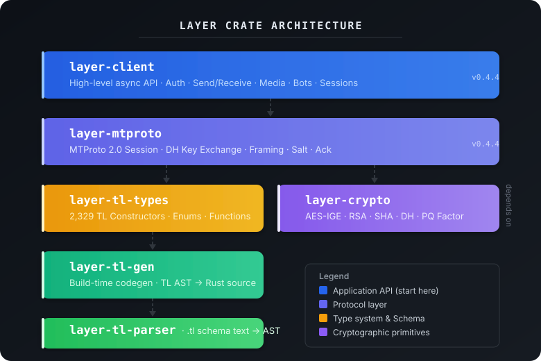
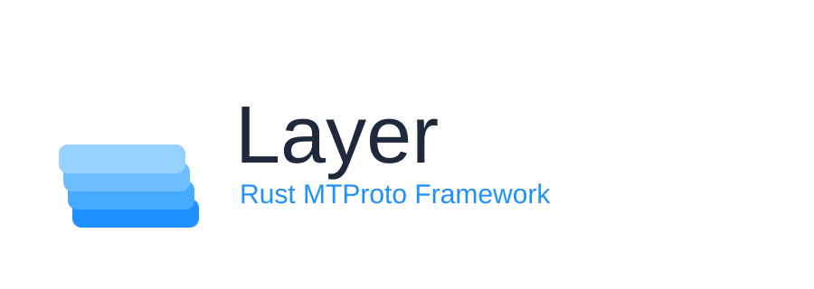
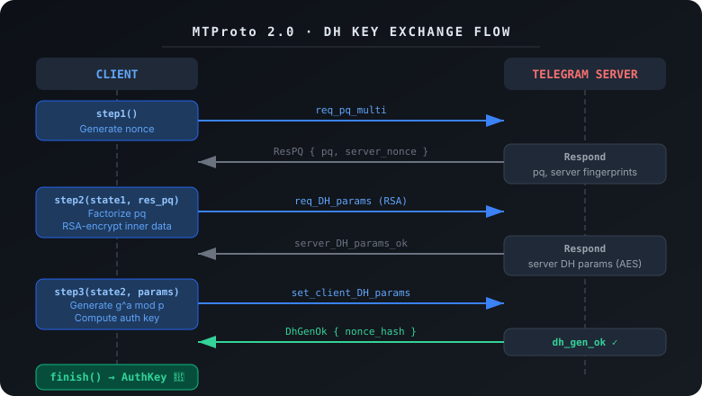
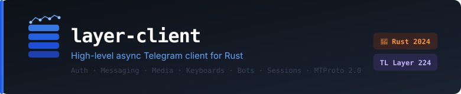
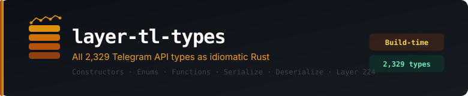
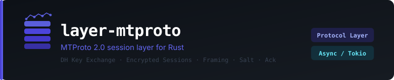
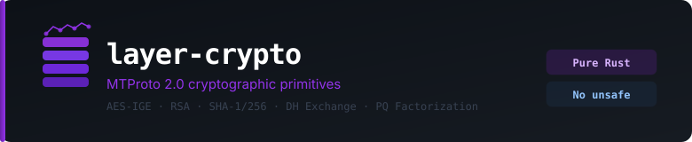
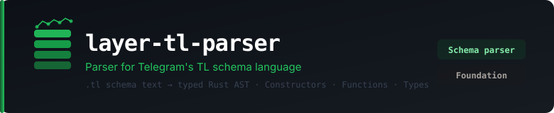
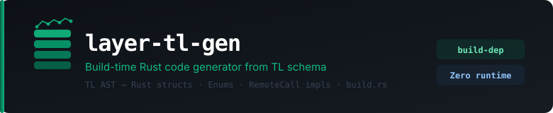
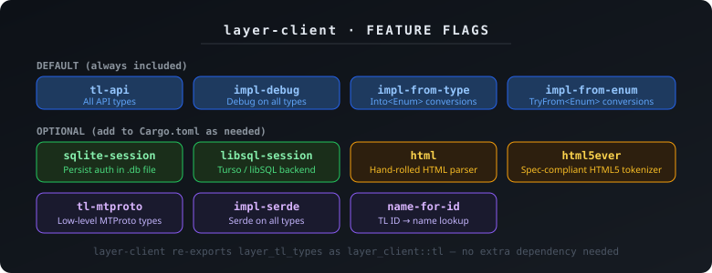

⚡ layer
A modular, production-grade async Rust implementation of the Telegram MTProto protocol


layer is a hand-written, bottom-up implementation of Telegram MTProto in pure Rust. Every component — from the .tl schema parser, to AES-IGE encryption, to the Diffie-Hellman key exchange, to the typed async update stream — is owned and understood by this project.
No black boxes. No magic. Just Rust, all the way down.
Why layer?
Most Telegram libraries are thin wrappers around generated code or ports from Python/JavaScript. layer is different — it was built from scratch to understand MTProto at the lowest level, then wrapped in an ergonomic high-level API.
client.invoke() with full type safety.Crate overview

| Crate | Description | Typical user |
|---|---|---|
layer-client | High-level async client — auth, send, receive, bots | ✅ You |
layer-tl-types | All Layer 224 constructors, functions, enums | Raw API calls |
layer-mtproto | MTProto session, DH, framing, transport | Library authors |
layer-crypto | AES-IGE, RSA, SHA, auth key derivation | Internal |
layer-tl-gen | Build-time Rust code generator | Build tool |
layer-tl-parser | .tl schema → AST parser | Build tool |
TIP: Most users only ever import
layer-client. The other crates are either used internally or for advanced raw API calls.
Quick install
[dependencies]
layer-client = "0.4.6"
tokio = { version = "1", features = ["full"] }
Then head to Installation for credentials setup, or jump straight to:
- Quick Start — User Account — login, send a message, receive updates
- Quick Start — Bot — bot token login, commands, callbacks
What’s new in v0.4.6
StringSessionBackend— portable base64 sessions, no file requiredLibSqlBackend— libsql/Turso remote database sessionsUpdate::ChatActionandUpdate::UserStatus— new typed update variantssync_update_state()— force immediate pts/seq reconciliation- 7 bug fixes (pagination, memory leaks, chunk alignment, and more)
See the full CHANGELOG.
Acknowledgements
- Lonami for grammers — the architecture, SRP math, and session design are deeply inspired by this fantastic library.
- Telegram for the detailed MTProto specification.
- The Rust async ecosystem:
tokio,flate2,getrandom,sha2, and friends.

Installation
Add to Cargo.toml
[dependencies]
layer-client = "0.4.6"
tokio = { version = "1", features = ["full"] }
layer-client re-exports everything you need for both user clients and bots.
Getting API credentials
Every Telegram API call requires an api_id (integer) and api_hash (hex string) from your registered app.
Step-by-step:
- Go to https://my.telegram.org and log in with your phone number
- Click API development tools
- Fill in any app name, short name, platform (Desktop), and URL (can be blank)
- Click Create application
- Copy
App api_idandApp api_hash
SECURITY: Never hardcode credentials in source code. Use environment variables or a secrets file that is in
.gitignore.
#![allow(unused)]
fn main() {
// Good — from environment
let api_id: i32 = std::env::var("TG_API_ID")?.parse()?;
let api_hash: String = std::env::var("TG_API_HASH")?;
// Bad — hardcoded in source
let api_id = 12345;
let api_hash = "deadbeef..."; // ← never do this in a public repo
}Bot token (bots only)
For bots, additionally get a bot token from @BotFather:
- Open Telegram → search
@BotFather→/start - Send
/newbot - Choose a display name (e.g. “My Awesome Bot”)
- Choose a username ending in
bot(e.g.my_awesome_bot) - Copy the token:
1234567890:ABCdefGHIjklMNOpqrSTUvwxYZ
Optional features
SQLite session storage
layer-client = { version = "0.4.6", features = ["sqlite-session"] }
Stores session data in a SQLite database instead of a binary file. More robust for long-running servers.
LibSQL / Turso session storage — New in v0.4.6
layer-client = { version = "0.4.6", features = ["libsql-session"] }
Backed by libsql — supports local embedded databases and remote Turso cloud databases. Ideal for serverless or distributed deployments.
#![allow(unused)]
fn main() {
use layer_client::session_backend::LibSqlBackend;
// Local
let backend = LibSqlBackend::open_local("session.libsql").await?;
// Remote (Turso cloud)
let backend = LibSqlBackend::open_remote(
"libsql://your-db.turso.io",
"your-turso-auth-token",
).await?;
}String session (portable, no extra deps) — New in v0.4.6
No feature flag needed. Encode a session as a base64 string and restore it anywhere:
#![allow(unused)]
fn main() {
// Export
let s = client.export_session_string().await?;
// Restore
let (client, _shutdown) = Client::with_string_session(
&s, api_id, api_hash,
).await?;
}See Session Backends for the full guide.
HTML entity parsing
# Built-in hand-rolled HTML parser (no extra deps)
layer-client = { version = "0.4.6", features = ["html"] }
# OR: spec-compliant html5ever tokenizer (overrides built-in)
layer-client = { version = "0.4.6", features = ["html5ever"] }
| Feature | Deps added | Notes |
|---|---|---|
html | none | Fast, minimal, covers common Telegram HTML tags |
html5ever | html5ever | Full spec-compliant tokenizer; use when parsing arbitrary HTML |
Raw type system features (layer-tl-types)
If you use layer-tl-types directly for raw API access:
layer-tl-types = { version = "0.4.6", features = [
"tl-api", # Telegram API types (required)
"tl-mtproto", # Low-level MTProto types
"impl-debug", # Debug trait on all types (default ON)
"impl-from-type", # From<types::T> for enums::E (default ON)
"impl-from-enum", # TryFrom<enums::E> for types::T (default ON)
"name-for-id", # name_for_id(u32) -> Option<&'static str>
"impl-serde", # serde::Serialize / Deserialize
] }
Verifying installation
use layer_tl_types::LAYER;
fn main() {
println!("Using Telegram API Layer {}", LAYER);
// → Using Telegram API Layer 224
}Platform notes
| Platform | Status | Notes |
|---|---|---|
| Linux x86_64 | ✅ Fully supported | |
| macOS (Apple Silicon + Intel) | ✅ Fully supported | |
| Windows | ✅ Supported | Use WSL2 for best experience |
| Android (Termux) | ✅ Works | Native ARM64 |
| iOS | ⚠️ Untested | No async runtime constraints known |
Quick Start — User Account
A complete working example: connect, log in, send a message to Saved Messages, and listen for incoming messages.
use layer_client::{Client, Config, SignInError};
use layer_client::update::Update;
use std::io::{self, Write};
#[tokio::main]
async fn main() -> Result<(), Box<dyn std::error::Error>> {
let (client, _shutdown) = Client::builder()
.api_id(std::env::var("TG_API_ID")?.parse()?)
.api_hash(std::env::var("TG_API_HASH")?)
.session("my.session")
.connect()
.await?;
// ── Login (skipped if session file already has valid auth) ──
if !client.is_authorized().await? {
print!("Phone number (+1234567890): ");
io::stdout().flush()?;
let phone = read_line();
let token = client.request_login_code(&phone).await?;
print!("Verification code: ");
io::stdout().flush()?;
let code = read_line();
match client.sign_in(&token, &code).await {
Ok(name) => println!("✅ Signed in as {name}"),
Err(SignInError::PasswordRequired(pw_token)) => {
print!("2FA password: ");
io::stdout().flush()?;
let pw = read_line();
client.check_password(pw_token, &pw).await?;
println!("✅ 2FA verified");
}
Err(e) => return Err(e.into()),
}
client.save_session().await?;
}
// ── Send a message to yourself ──────────────────────────────
client.send_to_self("Hello from layer! 👋").await?;
println!("Message sent to Saved Messages");
// ── Stream incoming updates ─────────────────────────────────
println!("Listening for messages… (Ctrl+C to quit)");
let mut updates = client.stream_updates();
while let Some(update) = updates.next().await {
match update {
Update::NewMessage(msg) if !msg.outgoing() => {
let text = msg.text().unwrap_or("(no text)");
let sender = msg.sender_id()
.map(|p| format!("{p:?}"))
.unwrap_or_else(|| "unknown".into());
println!("📨 [{sender}] {text}");
}
Update::MessageEdited(msg) => {
println!("✏️ Edited: {}", msg.text().unwrap_or(""));
}
_ => {}
}
}
Ok(())
}
fn read_line() -> String {
let mut s = String::new();
io::stdin().read_line(&mut s).unwrap();
s.trim().to_string()
}Run it
TG_API_ID=12345 TG_API_HASH=yourHash cargo run
On first run you’ll be prompted for your phone number and the code Telegram sends. On subsequent runs, the session is reloaded from my.session and login is skipped automatically.
What each step does
| Step | Method | Description |
|---|---|---|
| Connect | Client::builder().connect() | Opens TCP, performs DH handshake, loads session |
| Check auth | is_authorized | Returns true if session has a valid logged-in user |
| Request code | request_login_code | Sends SMS/app code to the phone |
| Sign in | sign_in | Submits the code. Returns PasswordRequired if 2FA is on |
| 2FA | check_password | Performs SRP exchange — password never sent in plain text |
| Save | save_session | Writes auth key + DC info to disk |
| Stream | stream_updates | Returns an UpdateStream async iterator |
Next steps
- User Login — full guide
- Two-Factor Auth (2FA)
- Session Backends — string sessions, SQLite, Turso
- Update Types
Quick Start — Bot
A production-ready bot skeleton with commands, callback queries, and inline mode — all handled concurrently.
use layer_client::{Client, InputMessage, parsers::parse_markdown, update::Update};
use layer_tl_types as tl;
use std::sync::Arc;
#[tokio::main]
async fn main() -> Result<(), Box<dyn std::error::Error>> {
let (client, _shutdown) = Client::builder()
.api_id(std::env::var("API_ID")?.parse()?)
.api_hash(std::env::var("API_HASH")?)
.session("bot.session")
.connect()
.await?;
let client = Arc::new(client);
if !client.is_authorized().await? {
client.bot_sign_in(&std::env::var("BOT_TOKEN")?).await?;
client.save_session().await?;
}
let me = client.get_me().await?;
println!("✅ @{} is online", me.username.as_deref().unwrap_or("bot"));
let mut updates = client.stream_updates();
while let Some(update) = updates.next().await {
let client = client.clone();
// Each update in its own task — the loop never blocks
tokio::spawn(async move {
if let Err(e) = dispatch(update, &client).await {
eprintln!("Handler error: {e}");
}
});
}
Ok(())
}
async fn dispatch(
update: Update,
client: &Client,
) -> Result<(), Box<dyn std::error::Error + Send + Sync>> {
match update {
// ── Commands ───────────────────────────────────────────────
Update::NewMessage(msg) if !msg.outgoing() => {
let text = msg.text().unwrap_or("").trim().to_string();
let peer = match msg.peer_id() {
Some(p) => p.clone(),
None => return Ok(()),
};
let reply_to = msg.id();
if !text.starts_with('/') { return Ok(()); }
let cmd = text.split_whitespace().next().unwrap_or("");
let arg = text[cmd.len()..].trim();
match cmd {
"/start" => {
let (t, e) = parse_markdown(
"👋 **Hello!** I'm built with **layer** — async Telegram MTProto in Rust 🦀\n\n\
Use /help to see all commands."
);
client.send_message_to_peer_ex(peer, &InputMessage::text(t)
.entities(e).reply_to(Some(reply_to))).await?;
}
"/help" => {
let (t, e) = parse_markdown(
"📖 **Commands**\n\n\
/start — Welcome message\n\
/ping — Latency check\n\
/echo `<text>` — Repeat your text\n\
/upper `<text>` — UPPERCASE\n\
/lower `<text>` — lowercase\n\
/reverse `<text>` — esreveR\n\
/id — Your user and chat ID"
);
client.send_message_to_peer_ex(peer, &InputMessage::text(t)
.entities(e).reply_to(Some(reply_to))).await?;
}
"/ping" => {
let start = std::time::Instant::now();
client.send_message_to_peer(peer.clone(), "🏓 …").await?;
let ms = start.elapsed().as_millis();
let (t, e) = parse_markdown(&format!("🏓 **Pong!** `{ms} ms`"));
client.send_message_to_peer_ex(peer, &InputMessage::text(t)
.entities(e).reply_to(Some(reply_to))).await?;
}
"/echo" => { client.send_message_to_peer(peer, if arg.is_empty() { "Usage: /echo <text>" } else { arg }).await?; }
"/upper" => { client.send_message_to_peer(peer, &arg.to_uppercase()).await?; }
"/lower" => { client.send_message_to_peer(peer, &arg.to_lowercase()).await?; }
"/reverse" => {
let rev: String = arg.chars().rev().collect();
client.send_message_to_peer(peer, &rev).await?;
}
"/id" => {
let chat = match &peer {
tl::enums::Peer::User(u) => format!("User `{}`", u.user_id),
tl::enums::Peer::Chat(c) => format!("Group `{}`", c.chat_id),
tl::enums::Peer::Channel(c) => format!("Channel `{}`", c.channel_id),
};
let (t, e) = parse_markdown(&format!("🪪 **Chat:** {chat}"));
client.send_message_to_peer_ex(peer, &InputMessage::text(t)
.entities(e).reply_to(Some(reply_to))).await?;
}
_ => { client.send_message_to_peer(peer, "❓ Unknown command. Try /help").await?; }
}
}
// ── Callback queries ───────────────────────────────────────
Update::CallbackQuery(cb) => {
match cb.data().unwrap_or("") {
"help" => { client.answer_callback_query(cb.query_id, Some("Send /help for commands"), false).await?; }
"about" => { client.answer_callback_query(cb.query_id, Some("Built with layer — Rust MTProto 🦀"), true).await?; }
_ => { client.answer_callback_query(cb.query_id, None, false).await?; }
}
}
// ── Inline mode ────────────────────────────────────────────
Update::InlineQuery(iq) => {
let q = iq.query().to_string();
let qid = iq.query_id;
let results = vec![
make_article("1", "🔠 UPPER", &q.to_uppercase()),
make_article("2", "🔡 lower", &q.to_lowercase()),
make_article("3", "🔄 Reversed", &q.chars().rev().collect::<String>()),
];
client.answer_inline_query(qid, results, 30, false, None).await?;
}
_ => {}
}
Ok(())
}
fn make_article(id: &str, title: &str, text: &str) -> tl::enums::InputBotInlineResult {
tl::enums::InputBotInlineResult::InputBotInlineResult(tl::types::InputBotInlineResult {
id: id.into(), r#type: "article".into(),
title: Some(title.into()), description: Some(text.into()),
url: None, thumb: None, content: None,
send_message: tl::enums::InputBotInlineMessage::Text(
tl::types::InputBotInlineMessageText {
no_webpage: false, invert_media: false,
message: text.into(), entities: None, reply_markup: None,
}
),
})
}Key differences: User vs Bot
| Capability | User account | Bot |
|---|---|---|
| Login method | Phone + code + optional 2FA | Bot token from @BotFather |
| Read all messages | ✅ In any joined chat | ❌ Only messages directed at it |
| Send to any peer | ✅ | ❌ User must start the bot first |
| Inline mode | ❌ | ✅ @botname query in any chat |
| Callback queries | ✅ | ✅ |
| Anonymous in groups | ❌ | ✅ If admin |
| Rate limits | Stricter | More generous |
Next steps
User Login
User login happens in three steps: request code → submit code → (optional) submit 2FA password.
Step 1 — Request login code
#![allow(unused)]
fn main() {
let token = client.request_login_code("+1234567890").await?;
}This sends a verification code to the phone number via SMS or Telegram app notification. The returned LoginToken must be passed to the next step.
Step 2 — Submit the code
#![allow(unused)]
fn main() {
match client.sign_in(&token, "12345").await {
Ok(name) => {
println!("Signed in as {name}");
}
Err(SignInError::PasswordRequired(password_token)) => {
// 2FA is enabled — go to step 3
}
Err(e) => return Err(e.into()),
}
}sign_in returns:
Ok(String)— the user’s full name, login completeErr(SignInError::PasswordRequired(PasswordToken))— 2FA is enabled, need passwordErr(e)— wrong code, expired code, or network error
Step 3 — 2FA password (if required)
#![allow(unused)]
fn main() {
client.check_password(password_token, "my_2fa_password").await?;
}This performs the full SRP (Secure Remote Password) exchange. The password is never sent to Telegram in plain text — only a cryptographic proof is transmitted.
Save the session
After a successful login, always save the session so you don’t need to log in again:
#![allow(unused)]
fn main() {
client.save_session().await?;
}Full example with stdin
#![allow(unused)]
fn main() {
use layer_client::{Client, Config, SignInError};
use std::io::{self, BufRead, Write};
async fn login(client: &Client) -> Result<(), Box<dyn std::error::Error>> {
if client.is_authorized().await? {
return Ok(());
}
print!("Phone number: ");
io::stdout().flush()?;
let phone = read_line();
let token = client.request_login_code(&phone).await?;
print!("Code: ");
io::stdout().flush()?;
let code = read_line();
match client.sign_in(&token, &code).await {
Ok(name) => println!("✅ Welcome, {name}!"),
Err(SignInError::PasswordRequired(t)) => {
print!("2FA password: ");
io::stdout().flush()?;
let pw = read_line();
client.check_password(t, &pw).await?;
println!("✅ 2FA verified");
}
Err(e) => return Err(e.into()),
}
client.save_session().await?;
Ok(())
}
fn read_line() -> String {
let stdin = io::stdin();
stdin.lock().lines().next().unwrap().unwrap().trim().to_string()
}
}Sign out
#![allow(unused)]
fn main() {
client.sign_out().await?;
}This revokes the auth key on Telegram’s servers and deletes the local session file.
How the DH auth key exchange works
Under the hood, every new session establishes a shared auth key via a 3-step Diffie-Hellman exchange before any login code is ever sent. This key is what secures the entire session.

- Client sends
req_pq_multi— server responds with apqproduct - Client factorises
pqinto primes (Pollard’s rho), encrypts its DH parameters with the server’s RSA key - Server responds with
server_DH_params_ok— client completesg^ab mod p - Both sides now share a 2048-bit auth key — login code is sent encrypted using this key
See Crate Architecture for more on the MTProto internals.
Bot Login
Bot login is simpler than user login — just a single call with a bot token.
Getting a bot token
- Open Telegram and start a chat with @BotFather
- Send
/newbot - Follow the prompts to choose a name and username
- BotFather gives you a token like:
1234567890:ABCdefGHIjklMNOpqrSTUvwxYZ
Login
#![allow(unused)]
fn main() {
client.bot_sign_in("1234567890:ABCdef...").await?;
client.save_session().await?;
}That’s it. On the next run, is_authorized() returns true and you skip the login entirely:
#![allow(unused)]
fn main() {
if !client.is_authorized().await? {
client.bot_sign_in(BOT_TOKEN).await?;
client.save_session().await?;
}
}Get bot info
After login you can fetch the bot’s own User object:
#![allow(unused)]
fn main() {
let me = client.get_me().await?;
println!("Bot: @{}", me.username.as_deref().unwrap_or("?"));
println!("ID: {}", me.id);
println!("Is bot: {}", me.bot);
}Environment variables (recommended)
Don’t hardcode credentials in source code. Use environment variables instead:
#![allow(unused)]
fn main() {
let api_id: i32 = std::env::var("API_ID")?.parse()?;
let api_hash = std::env::var("API_HASH")?;
let bot_token = std::env::var("BOT_TOKEN")?;
}Then run:
API_ID=12345 API_HASH=abc123 BOT_TOKEN=xxx:yyy cargo run
Or put them in a .env file and use the dotenvy crate.
Two-Factor Authentication (2FA)
Telegram’s 2FA uses Secure Remote Password (SRP) — a zero-knowledge proof. Your password is never sent to Telegram’s servers; only a cryptographic proof is transmitted.
How it works in layer
#![allow(unused)]
fn main() {
match client.sign_in(&login_token, &code).await {
Ok(name) => {
// ✅ No 2FA — login complete
println!("Welcome, {name}!");
}
Err(SignInError::PasswordRequired(password_token)) => {
// 2FA is enabled — the password_token carries SRP parameters
client.check_password(password_token, "my_2fa_password").await?;
println!("✅ 2FA verified");
}
Err(e) => return Err(e.into()),
}
}check_password performs the full SRP computation internally:
- Downloads SRP parameters from Telegram (
account.getPassword) - Derives a verifier from your password using PBKDF2-SHA512
- Computes the SRP proof and sends it (
auth.checkPassword)
Getting the password hint
The PasswordToken gives you access to the hint the user set when enabling 2FA:
#![allow(unused)]
fn main() {
Err(SignInError::PasswordRequired(token)) => {
let hint = token.hint().unwrap_or("no hint set");
println!("Enter your 2FA password (hint: {hint}):");
let pw = read_line();
client.check_password(token, &pw).await?;
}
}Changing the 2FA password
NOTE: Changing 2FA password requires calling
account.updatePasswordSettingsvia raw API. This is an advanced operation — see Raw API Access.
Wrong password errors
#![allow(unused)]
fn main() {
use layer_client::{InvocationError, RpcError};
match client.check_password(token, &pw).await {
Ok(_) => println!("✅ OK"),
Err(InvocationError::Rpc(RpcError { message, .. }))
if message.contains("PASSWORD_HASH_INVALID") =>
{
println!("❌ Wrong password. Try again.");
}
Err(e) => return Err(e.into()),
}
}Security notes
layer-cryptoimplements the SRP math from scratch — no external SRP library- The password derivation uses PBKDF2-SHA512 with 100,000+ iterations
- The SRP exchange is authenticated: a MITM cannot substitute their own verifier
Session Persistence
A session stores your auth key, DC address, and peer access-hash cache. Without it, you’d need to log in on every run.
Binary file (default)
#![allow(unused)]
fn main() {
use layer_client::{Client, Config};
let (client, _shutdown) = Client::connect(Config {
session_path: "my.session".into(),
api_id: 12345,
api_hash: "abc123".into(),
..Default::default()
}).await?;
}After login, save to disk:
#![allow(unused)]
fn main() {
client.save_session().await?;
}The file is created at session_path and reloaded automatically on the next Client::connect. Keep it in .gitignore — it grants full API access to your account.
In-memory (ephemeral)
Nothing written to disk. Useful for tests or short-lived scripts:
#![allow(unused)]
fn main() {
use layer_client::session_backend::InMemoryBackend;
let (client, _shutdown) = Client::builder()
.session(InMemoryBackend::new())
.api_id(12345)
.api_hash("abc123")
.connect()
.await?;
}Login is required on every run since nothing persists.
SQLite (robust, long-running servers)
layer-client = { version = "0.4.6", features = ["sqlite-session"] }
#![allow(unused)]
fn main() {
let (client, _shutdown) = Client::connect(Config {
session_path: "session.db".into(),
..Default::default()
}).await?;
}SQLite is more resilient against crash-corruption than the binary format. Ideal for production bots.
String session — New in v0.4.6
Encode the entire session as a portable base64 string. Store it in an env var, a DB column, or CI secrets:
#![allow(unused)]
fn main() {
// Export (after login)
let s = client.export_session_string().await?;
// → "AQAAAAEDAADtE1lMHBT7...=="
// Restore
let (client, _shutdown) = Client::with_string_session(
&s, api_id, api_hash,
).await?;
// Or via builder
use layer_client::session_backend::StringSessionBackend;
let (client, _shutdown) = Client::builder()
.session(StringSessionBackend::new(&s))
.api_id(api_id)
.api_hash(api_hash)
.connect()
.await?;
}See Session Backends for the full guide including LibSQL (Turso) backend.
What’s stored in a session
| Field | Description |
|---|---|
| Auth key | 2048-bit DH-derived key for encryption |
| Auth key ID | Hash of the key, used as identifier |
| DC ID | Which Telegram data center to connect to |
| DC address | The IP:port of the DC |
| Server salt | Updated regularly by Telegram |
| Sequence numbers | For message ordering |
| Peer cache | User/channel access hashes (speeds up API calls) |
Security
SECURITY: A stolen session file gives full API access to your account. Protect it like a password.
- Add to
.gitignore:*.session,*.session.db - Set restrictive permissions:
chmod 600 my.session - Never log or print session file contents
- If compromised: revoke from Telegram → Settings → Devices → Terminate session
Multi-session / multi-account
Each Client::connect loads one session. For multiple accounts, use multiple files:
#![allow(unused)]
fn main() {
let (client_a, _) = Client::connect(Config {
session_path: "account_a.session".into(),
api_id, api_hash: api_hash.clone(), ..Default::default()
}).await?;
let (client_b, _) = Client::connect(Config {
session_path: "account_b.session".into(),
api_id, api_hash: api_hash.clone(), ..Default::default()
}).await?;
}Session Backends
Layer ships five session backends out of the box. They all implement the SessionBackend trait and are hot-swappable — switch by changing one line.
Built-in backends
| Backend | Feature flag | Best for |
|---|---|---|
BinaryFileBackend | (default, no flag) | Single-process bots, local scripts |
InMemoryBackend | (default, no flag) | Tests, ephemeral tasks |
StringSessionBackend | (default, no flag) | Serverless, env-var storage, CI bots |
SqliteBackend | sqlite-session | Multi-session local apps |
LibSqlBackend | libsql-session | Distributed / Turso-backed storage |
BinaryFileBackend (default)
Saves the session as a binary file on disk. No feature flag needed.
#![allow(unused)]
fn main() {
use layer_client::Client;
let (client, _shutdown) = Client::builder()
.api_id(12345)
.api_hash("your_api_hash")
.session("my.session") // BinaryFileBackend at this path
.connect()
.await?;
}Or construct directly:
#![allow(unused)]
fn main() {
use layer_client::session_backend::BinaryFileBackend;
use std::sync::Arc;
let backend = Arc::new(BinaryFileBackend::new("bot.session"));
}InMemoryBackend
Non-persistent — lost on process exit. Ideal for tests.
#![allow(unused)]
fn main() {
let (client, _shutdown) = Client::builder()
.api_id(12345)
.api_hash("your_api_hash")
.in_memory()
.connect()
.await?;
}Or construct directly:
#![allow(unused)]
fn main() {
use layer_client::session_backend::InMemoryBackend;
use std::sync::Arc;
let backend = Arc::new(InMemoryBackend::new());
}StringSessionBackend — portable auth
Encodes the entire session (auth key + DC + peer cache) as a single base64 string. Store it in an environment variable, a database column, or a secret manager.
Export
#![allow(unused)]
fn main() {
let session_string = client.export_session_string().await?;
println!("{session_string}"); // store this somewhere safe
}Restore
#![allow(unused)]
fn main() {
// Via builder
let session = std::env::var("TG_SESSION").unwrap_or_default();
let (client, _shutdown) = Client::builder()
.api_id(12345)
.api_hash("your_api_hash")
.session_string(session)
.connect()
.await?;
}#![allow(unused)]
fn main() {
// Via Config shorthand
let (client, _shutdown) = Client::connect(Config::with_string_session(session_string))
.await?;
}#![allow(unused)]
fn main() {
// Construct backend directly
use layer_client::session_backend::StringSessionBackend;
use std::sync::Arc;
let backend = Arc::new(StringSessionBackend::new(session_string));
}Pass an empty string to start a fresh session with no stored data.
SqliteBackend — local database
Requires feature flag:
layer-client = { version = "0.4.6", features = ["sqlite-session"] }
#![allow(unused)]
fn main() {
use layer_client::SqliteBackend;
use std::sync::Arc;
let (client, _shutdown) = Client::builder()
.api_id(12345)
.api_hash("your_api_hash")
.session_backend(Arc::new(SqliteBackend::new("sessions.db")))
.connect()
.await?;
}The file is created if it doesn’t exist.
LibSqlBackend — libsql / Turso
Requires feature flag:
layer-client = { version = "0.4.6", features = ["libsql-session"] }
#![allow(unused)]
fn main() {
use layer_client::LibSqlBackend;
use std::sync::Arc;
// Local embedded database
let backend = LibSqlBackend::new("local.db");
// Remote Turso database
let backend = LibSqlBackend::remote(
"libsql://your-db.turso.io",
"your-turso-auth-token",
);
let (client, _shutdown) = Client::builder()
.api_id(12345)
.api_hash("your_api_hash")
.session_backend(Arc::new(backend))
.connect()
.await?;
}Custom backend
Implement SessionBackend to use any storage — Redis, Postgres, S3, or anything else:
#![allow(unused)]
fn main() {
use layer_client::session_backend::{SessionBackend, PersistedSession, DcEntry, UpdateStateChange};
use std::io;
struct MyBackend {
// your fields (e.g. a DB pool)
}
impl SessionBackend for MyBackend {
fn save(&self, session: &PersistedSession) -> io::Result<()> {
// Serialize and store session
let bytes = serde_json::to_vec(session)
.map_err(|e| io::Error::new(io::ErrorKind::Other, e))?;
// e.g. write to Redis / Postgres
Ok(())
}
fn load(&self) -> io::Result<Option<PersistedSession>> {
// Load and deserialize
Ok(None)
}
fn delete(&self) -> io::Result<()> {
Ok(())
}
fn name(&self) -> &str {
"my-custom-backend"
}
// Optional: override granular methods for better performance
// Default impls call load() → mutate → save()
fn update_dc(&self, entry: &DcEntry) -> io::Result<()> {
// UPDATE single DC row (e.g. SQL UPDATE)
todo!()
}
fn set_home_dc(&self, dc_id: i32) -> io::Result<()> {
// UPDATE home_dc column only
todo!()
}
}
// Use it
let (client, _shutdown) = Client::builder()
.api_id(12345)
.api_hash("your_api_hash")
.session_backend(Arc::new(MyBackend { /* ... */ }))
.connect()
.await?;
}Granular SessionBackend methods
High-performance backends can override these to avoid full load/save round-trips:
| Method | When called | Default behaviour |
|---|---|---|
save(session) | Any state change | Required |
load() | On connect, and by default impls | Required |
delete() | Session wipe | Required |
name() | Logging/debug | Required |
update_dc(entry) | After DH handshake on a new DC | load → mutate → save |
set_home_dc(dc_id) | After a MIGRATE redirect | load → mutate → save |
apply_update_state(change) | After update-sequence change | load → mutate → save |
Using ClientBuilder to attach a backend
#![allow(unused)]
fn main() {
use std::sync::Arc;
use layer_client::{Client, session_backend::SessionBackend};
async fn connect_with_backend(
backend: impl SessionBackend + 'static,
api_id: i32,
api_hash: &str,
) -> anyhow::Result<()> {
let (client, _shutdown) = Client::builder()
.api_id(api_id)
.api_hash(api_hash)
.session_backend(Arc::new(backend))
.connect()
.await?;
// ...
Ok(())
}
}Sending Messages
Basic send
#![allow(unused)]
fn main() {
// By username
client.send_message("@username", "Hello!").await?;
// To yourself (Saved Messages)
client.send_message("me", "Note to self").await?;
client.send_to_self("Quick note").await?;
// By numeric ID (string form)
client.send_message("123456789", "Hi").await?;
}Send to a resolved peer
#![allow(unused)]
fn main() {
let peer = client.resolve_peer("@username").await?;
client.send_message_to_peer(peer, "Hello!").await?;
}Rich messages with InputMessage
InputMessage gives you full control over formatting, entities, reply markup, and more:
#![allow(unused)]
fn main() {
use layer_client::{InputMessage, parsers::parse_markdown};
// Markdown formatting
let (text, entities) = parse_markdown("**Bold** and _italic_ and `code`");
let msg = InputMessage::text(text)
.entities(entities);
client.send_message_to_peer_ex(peer, &msg).await?;
}Reply to a message
#![allow(unused)]
fn main() {
let msg = InputMessage::text("This is a reply")
.reply_to(Some(original_message_id));
client.send_message_to_peer_ex(peer, &msg).await?;
}With inline keyboard
#![allow(unused)]
fn main() {
use layer_tl_types as tl;
let keyboard = tl::enums::ReplyMarkup::ReplyInlineMarkup(
tl::types::ReplyInlineMarkup {
rows: vec![
tl::enums::KeyboardButtonRow::KeyboardButtonRow(
tl::types::KeyboardButtonRow {
buttons: vec![
tl::enums::KeyboardButton::Callback(
tl::types::KeyboardButtonCallback {
requires_password: false,
style: None,
text: "Click me!".into(),
data: b"my_data".to_vec(),
}
),
]
}
)
]
}
);
let msg = InputMessage::text("Choose an option:")
.reply_markup(keyboard);
client.send_message_to_peer_ex(peer, &msg).await?;
}Delete messages
#![allow(unused)]
fn main() {
// revoke = true removes for everyone, false removes only for you
client.delete_messages(vec![msg_id_1, msg_id_2], true).await?;
}Fetch message history
#![allow(unused)]
fn main() {
// (peer, limit, offset_id)
// offset_id = 0 means start from the newest
let messages = client.get_messages(peer, 50, 0).await?;
for msg in messages {
if let tl::enums::Message::Message(m) = msg {
println!("{}: {}", m.id, m.message);
}
}
}Receiving Updates
The update stream
stream_updates() returns an async stream of typed Update events:
#![allow(unused)]
fn main() {
use layer_client::update::Update;
let mut updates = client.stream_updates();
while let Some(update) = updates.next().await {
match update {
Update::NewMessage(msg) => { /* new message arrived */ }
Update::MessageEdited(msg) => { /* message was edited */ }
Update::MessageDeleted(del) => { /* message was deleted */ }
Update::CallbackQuery(cb) => { /* inline button pressed */ }
Update::InlineQuery(iq) => { /* @bot query in another chat */ }
Update::InlineSend(is) => { /* inline result was chosen */ }
Update::Raw(raw) => { /* any other update by constructor ID */ }
_ => {}
}
}
}Concurrent update handling
For bots under load, spawn each update into its own task so the receive loop never blocks:
#![allow(unused)]
fn main() {
use std::sync::Arc;
let client = Arc::new(client);
let mut updates = client.stream_updates();
while let Some(update) = updates.next().await {
let client = client.clone();
tokio::spawn(async move {
handle(update, client).await;
});
}
}Filtering outgoing messages
In user accounts, your own sent messages come back as updates with out = true. Filter them:
#![allow(unused)]
fn main() {
Update::NewMessage(msg) if !msg.outgoing() => {
// only incoming messages
}
}MessageDeleted
Deleted message updates only contain the message IDs, not the content:
#![allow(unused)]
fn main() {
Update::MessageDeleted(del) => {
println!("Deleted IDs: {:?}", del.messages());
// del.channel_id() — Some if deleted from a channel
}
}Inline Keyboards & Reply Markup
layer-client ships with two high-level keyboard builders — InlineKeyboard and ReplyKeyboard — so you never have to construct raw TL types by hand.
Both builders are in layer_client::keyboard and re-exported at the crate root:
#![allow(unused)]
fn main() {
use layer_client::keyboard::{Button, InlineKeyboard, ReplyKeyboard};
}InlineKeyboard — buttons attached to a message
Inline keyboards appear below a message and trigger Update::CallbackQuery when tapped.
#![allow(unused)]
fn main() {
use layer_client::keyboard::{Button, InlineKeyboard};
use layer_client::InputMessage;
let kb = InlineKeyboard::new()
.row([
Button::callback("✅ Yes", b"confirm:yes"),
Button::callback("❌ No", b"confirm:no"),
])
.row([
Button::url("📖 Docs", "https://docs.rs/layer-client"),
]);
client
.send_message_to_peer_ex(
peer.clone(),
&InputMessage::text("Do you want to proceed?").keyboard(kb),
)
.await?;
}InlineKeyboard methods
| Method | Description |
|---|---|
InlineKeyboard::new() | Create an empty keyboard |
.row(buttons) | Append a row; accepts any IntoIterator<Item = Button> |
.into_markup() | Convert to tl::enums::ReplyMarkup |
InlineKeyboard implements Into<tl::enums::ReplyMarkup>, so you can also pass it directly to InputMessage::reply_markup().
Button — all button types
Callback, URL, and common types
#![allow(unused)]
fn main() {
// Sends data to your bot as Update::CallbackQuery (max 64 bytes)
Button::callback("✅ Confirm", b"action:confirm")
// Opens URL in a browser
Button::url("🌐 Website", "https://example.com")
// Copy text to clipboard (Telegram 10.3+)
Button::copy_text("📋 Copy code", "PROMO2024")
// Login-widget: authenticates user before opening URL
Button::url_auth("🔐 Login", "https://example.com/auth", None, bot_input_user)
// Opens bot inline mode in the current chat with query pre-filled
Button::switch_inline("🔍 Search here", "default query")
// Chat picker so user can choose which chat to use inline mode in
Button::switch_elsewhere("📤 Share", "")
// Telegram Mini App with full JS bridge
Button::webview("🚀 Open App", "https://myapp.example.com")
// Simple webview without JS bridge
Button::simple_webview("ℹ️ Info", "https://info.example.com")
// Plain text for reply keyboards
Button::text("📸 Send photo")
// Launch a Telegram game (bots only)
Button::game("🎮 Play")
// Payment buy button (bots only, used with invoice)
Button::buy("💳 Pay $4.99")
}Reply-keyboard-only buttons
#![allow(unused)]
fn main() {
// Shares user's phone number on tap
Button::request_phone("📞 Share my number")
// Shares user's location on tap
Button::request_geo("📍 Share location")
// Opens poll creation interface
Button::request_poll("📊 Create poll")
// Forces quiz mode in poll creator
Button::request_quiz("🧠 Create quiz")
}Escape hatch
#![allow(unused)]
fn main() {
// Get the underlying tl::enums::KeyboardButton
let raw = Button::callback("x", b"x").into_raw();
}ReplyKeyboard — replacement keyboard
A reply keyboard replaces the user’s text input keyboard until dismissed.
The user’s tap arrives as a plain-text Update::NewMessage.
#![allow(unused)]
fn main() {
use layer_client::keyboard::{Button, ReplyKeyboard};
let kb = ReplyKeyboard::new()
.row([
Button::text("📸 Photo"),
Button::text("📄 Document"),
])
.row([Button::text("❌ Cancel")])
.resize() // shrink to fit content (recommended)
.single_use(); // hide after one press
client
.send_message_to_peer_ex(
peer.clone(),
&InputMessage::text("Choose file type:").keyboard(kb),
)
.await?;
}ReplyKeyboard methods
| Method | Description |
|---|---|
ReplyKeyboard::new() | Create an empty keyboard |
.row(buttons) | Append a row of buttons |
.resize() | Shrink keyboard to fit button count |
.single_use() | Dismiss after one tap |
.selective() | Show only to mentioned/replied users |
.into_markup() | Convert to tl::enums::ReplyMarkup |
Remove keyboard
#![allow(unused)]
fn main() {
use layer_tl_types as tl;
let remove = tl::enums::ReplyMarkup::ReplyKeyboardHide(
tl::types::ReplyKeyboardHide { selective: false }
);
client
.send_message_to_peer_ex(peer.clone(), &InputMessage::text("Done.").reply_markup(remove))
.await?;
}Answer callback queries
Always answer every CallbackQuery — Telegram shows a loading spinner until you do.
#![allow(unused)]
fn main() {
Update::CallbackQuery(cb) => {
let data = cb.data().unwrap_or(b"");
match data {
b"confirm:yes" => client.answer_callback_query(cb.query_id, Some("✅ Done!"), false).await?,
b"confirm:no" => client.answer_callback_query(cb.query_id, Some("❌ Cancelled"), false).await?,
_ => client.answer_callback_query(cb.query_id, None, false).await?,
}
}
}Pass alert: true to show a popup alert instead of a toast:
#![allow(unused)]
fn main() {
client.answer_callback_query(cb.query_id, Some("⛔ Access denied"), true).await?;
}Legacy raw TL pattern (still works)
If you prefer constructing TL types directly:
#![allow(unused)]
fn main() {
fn inline_kb(rows: Vec<Vec<tl::enums::KeyboardButton>>) -> tl::enums::ReplyMarkup {
```rust
use layer_tl_types as tl;
fn inline_kb(rows: Vec<Vec<tl::enums::KeyboardButton>>) -> tl::enums::ReplyMarkup {
tl::enums::ReplyMarkup::ReplyInlineMarkup(tl::types::ReplyInlineMarkup {
rows: rows.into_iter().map(|buttons|
tl::enums::KeyboardButtonRow::KeyboardButtonRow(
tl::types::KeyboardButtonRow { buttons }
)
).collect(),
})
}
fn btn_cb(text: &str, data: &str) -> tl::enums::KeyboardButton {
tl::enums::KeyboardButton::Callback(tl::types::KeyboardButtonCallback {
requires_password: false,
style: None,
text: text.into(),
data: data.as_bytes().to_vec(),
})
}
fn btn_url(text: &str, url: &str) -> tl::enums::KeyboardButton {
tl::enums::KeyboardButton::Url(tl::types::KeyboardButtonUrl {
style: None,
text: text.into(),
url: url.into(),
})
}
}Send with keyboard
#![allow(unused)]
fn main() {
let kb = inline_kb(vec![
vec![btn_cb("✅ Yes", "confirm:yes"), btn_cb("❌ No", "confirm:no")],
vec![btn_url("🌐 Docs", "https://github.com/ankit-chaubey/layer")],
]);
let (text, entities) = parse_markdown("**Do you want to proceed?**");
let msg = InputMessage::text(text)
.entities(entities)
.reply_markup(kb);
client.send_message_to_peer_ex(peer, &msg).await?;
}All button types
| Type | Constructor | Description |
|---|---|---|
| Callback | KeyboardButtonCallback | Triggers CallbackQuery with custom data |
| URL | KeyboardButtonUrl | Opens a URL in the browser |
| Web App | KeyboardButtonSimpleWebView | Opens a Telegram Web App |
| Switch Inline | KeyboardButtonSwitchInline | Opens inline mode with a query |
| Request Phone | KeyboardButtonRequestPhone | Requests the user’s phone number |
| Request Location | KeyboardButtonRequestGeoLocation | Requests location |
| Request Poll | KeyboardButtonRequestPoll | Opens poll creator |
| Request Peer | KeyboardButtonRequestPeer | Requests peer selection |
| Game | KeyboardButtonGame | Opens a Telegram game |
| Buy | KeyboardButtonBuy | Purchase button for payments |
| Copy | KeyboardButtonCopy | Copies text to clipboard |
Switch Inline button
Opens the bot’s inline mode in the current or another chat:
#![allow(unused)]
fn main() {
tl::enums::KeyboardButton::SwitchInline(tl::types::KeyboardButtonSwitchInline {
same_peer: false, // false = let user pick any chat
text: "🔍 Search with me".into(),
query: "default query".into(),
peer_types: None,
})
}Web App button
#![allow(unused)]
fn main() {
tl::enums::KeyboardButton::SimpleWebView(tl::types::KeyboardButtonSimpleWebView {
text: "Open App".into(),
url: "https://myapp.example.com".into(),
})
}Reply keyboard (replaces user’s keyboard)
#![allow(unused)]
fn main() {
let reply_kb = tl::enums::ReplyMarkup::ReplyKeyboardMarkup(
tl::types::ReplyKeyboardMarkup {
resize: true, // shrink to fit buttons
single_use: true, // hide after one tap
selective: false, // show to everyone
persistent: false, // don't keep after message
placeholder: Some("Choose an option…".into()),
rows: vec![
tl::enums::KeyboardButtonRow::KeyboardButtonRow(
tl::types::KeyboardButtonRow {
buttons: vec![
tl::enums::KeyboardButton::KeyboardButton(
tl::types::KeyboardButton { text: "🍕 Pizza".into() }
),
tl::enums::KeyboardButton::KeyboardButton(
tl::types::KeyboardButton { text: "🍔 Burger".into() }
),
]
}
),
tl::enums::KeyboardButtonRow::KeyboardButtonRow(
tl::types::KeyboardButtonRow {
buttons: vec![
tl::enums::KeyboardButton::KeyboardButton(
tl::types::KeyboardButton { text: "❌ Cancel".into() }
),
]
}
),
],
}
);
}The user’s choices arrive as plain text NewMessage updates.
Remove keyboard
#![allow(unused)]
fn main() {
let remove = tl::enums::ReplyMarkup::ReplyKeyboardHide(
tl::types::ReplyKeyboardHide { selective: false }
);
let msg = InputMessage::text("Keyboard removed.").reply_markup(remove);
}Button data format
Telegram limits callback button data to 64 bytes. Use compact, parseable formats:
#![allow(unused)]
fn main() {
// Good — structured, compact
"vote:yes"
"page:3"
"item:42:delete"
"menu:settings:notifications"
// Bad — verbose
"user_clicked_the_settings_button"
}Media & Files
Upload and send a photo
#![allow(unused)]
fn main() {
// Upload from disk path
let uploaded = client.upload_file("photo.jpg").await?;
// Send as compressed photo
client.send_file(
peer,
uploaded.as_photo_media(),
Some("My caption here"),
).await?;
}Upload and send a document (any file)
#![allow(unused)]
fn main() {
let uploaded = client.upload_file("report.pdf").await?;
// Send as document (preserves original quality/format)
client.send_file(
peer,
uploaded.as_document_media(),
Some("Monthly report"),
).await?;
}TIP: For photos,
as_photo_media()lets Telegram compress and display them inline. Useas_document_media()to preserve original file quality and format.
Upload from a stream
#![allow(unused)]
fn main() {
use tokio::fs::File;
let file = File::open("video.mp4").await?;
let name = "video.mp4".to_string();
let size = file.metadata().await?.len() as i32;
let mime = "video/mp4".to_string();
let uploaded = client.upload_stream(file, size, name, mime).await?;
client.send_file(peer, uploaded.as_document_media(), None).await?;
}Send an album (multiple photos/videos)
#![allow(unused)]
fn main() {
let img1 = client.upload_file("photo1.jpg").await?;
let img2 = client.upload_file("photo2.jpg").await?;
let img3 = client.upload_file("photo3.jpg").await?;
client.send_album(
peer,
vec![
img1.as_photo_media(),
img2.as_photo_media(),
img3.as_photo_media(),
],
Some("Our trip 📸"),
).await?;
}Albums are grouped as a single visual unit in the chat.
UploadedFile — methods
| Method | Returns | Description |
|---|---|---|
uploaded.name() | &str | Original filename |
uploaded.mime_type() | &str | Detected MIME type |
uploaded.as_photo_media() | InputMedia | Send as compressed photo |
uploaded.as_document_media() | InputMedia | Send as document |
Download media from a message
#![allow(unused)]
fn main() {
if let tl::enums::Message::Message(m) = &raw_msg {
if let Some(media) = &m.media {
// download_media returns an async iterator of chunks
let location = client.download_location(media);
if let Some(loc) = location {
let mut iter = client.iter_download(loc);
let mut file = tokio::fs::File::create("download.bin").await?;
while let Some(chunk) = iter.next().await? {
tokio::io::AsyncWriteExt::write_all(&mut file, &chunk).await?;
}
}
}
}
}DownloadIter — options
#![allow(unused)]
fn main() {
let mut iter = client.iter_download(location)
.chunk_size(512 * 1024); // 512 KB per request (default: 128 KB)
}MIME type reference
| File type | MIME | Displays as |
|---|---|---|
| JPEG, PNG, WebP | image/jpeg, image/png | Photo (compressed) |
| GIF | image/gif | Animated image |
| MP4, MOV | video/mp4 | Video player |
| OGG (Opus codec) | audio/ogg | Voice message |
| MP3, FLAC | audio/mpeg | Audio player |
application/pdf | Document with preview | |
| ZIP, RAR | application/zip | Generic document |
| TGS | application/x-tgsticker | Animated sticker |
Get profile photos
#![allow(unused)]
fn main() {
let photos = client.get_profile_photos(peer, 10).await?;
for photo in &photos {
if let tl::enums::Photo::Photo(p) = photo {
println!("Photo ID {} — {} sizes", p.id, p.sizes.len());
// Find the largest size
let best = p.sizes.iter()
.filter_map(|s| match s {
tl::enums::PhotoSize::PhotoSize(ps) => Some(ps),
_ => None,
})
.max_by_key(|ps| ps.size);
if let Some(size) = best {
println!(" Largest: {}x{} ({}B)", size.w, size.h, size.size);
}
}
}
}Message Formatting
Telegram supports rich text formatting through message entities — positional markers that indicate bold, italic, code, links, and more.
Using parse_markdown
The easiest way is parse_markdown, which converts a Markdown-like syntax into a (String, Vec<MessageEntity>) tuple:
#![allow(unused)]
fn main() {
use layer_client::parsers::parse_markdown;
use layer_client::InputMessage;
let (plain, entities) = parse_markdown(
"**Bold text**, _italic text_, `inline code`\n\
and a [clickable link](https://example.com)"
);
let msg = InputMessage::text(plain).entities(entities);
client.send_message_to_peer_ex(peer, &msg).await?;
}Supported syntax
| Markdown | Entity type | Example |
|---|---|---|
**text** | Bold | Hello |
_text_ | Italic | Hello |
*text* | Italic | Hello |
__text__ | Underline | Hello |
~~text~~ | Strikethrough | |
`text` | Code (inline) | Hello |
```text``` | Pre (code block) | block |
||text|| | Spoiler | ▓▓▓▓▓ |
[label](url) | Text link | clickable |
Building entities manually
For full control, construct MessageEntity values directly:
#![allow(unused)]
fn main() {
use layer_tl_types as tl;
let text = "Hello world";
let entities = vec![
// Bold "Hello"
tl::enums::MessageEntity::Bold(tl::types::MessageEntityBold {
offset: 0,
length: 5,
}),
// Code "world"
tl::enums::MessageEntity::Code(tl::types::MessageEntityCode {
offset: 6,
length: 5,
}),
];
let msg = InputMessage::text(text).entities(entities);
}All entity types (Layer 224)
| Enum variant | Description |
|---|---|
Bold | Bold text |
Italic | Italic text |
Underline | Underlined |
Strike | |
Spoiler | Hidden until tapped |
Code | Monospace inline |
Pre | Code block (optional language) |
TextUrl | Hyperlink with custom label |
Url | Auto-detected URL |
Email | Auto-detected email |
Phone | Auto-detected phone number |
Mention | @username mention |
MentionName | Inline mention by user ID |
Hashtag | #hashtag |
Cashtag | $TICKER |
BotCommand | /command |
BankCard | Bank card number |
BlockquoteCollapsible | Collapsible quote block |
CustomEmoji | Custom emoji by document ID |
FormattedDate | ✨ New in Layer 223 — displays a date in local time |
Pre block with language
#![allow(unused)]
fn main() {
tl::enums::MessageEntity::Pre(tl::types::MessageEntityPre {
offset: 0,
length: code_text.len() as i32,
language: "rust".into(),
})
}Mention by user ID (no @username needed)
#![allow(unused)]
fn main() {
tl::enums::MessageEntity::MentionName(tl::types::MessageEntityMentionName {
offset: 0,
length: 5, // length of the label text
user_id: 123456789,
})
}FormattedDate — Layer 224
A new entity that automatically formats a unix timestamp into the user’s local timezone and locale:
#![allow(unused)]
fn main() {
tl::enums::MessageEntity::FormattedDate(tl::types::MessageEntityFormattedDate {
flags: 0,
relative: false, // "yesterday", "2 days ago"
short_time: false, // "14:30"
long_time: false, // "2:30 PM"
short_date: true, // "Jan 5"
long_date: false, // "January 5, 2026"
day_of_week: false, // "Monday"
offset: 0,
length: text.len() as i32,
date: 1736000000, // unix timestamp
})
}Reactions
Reactions are emoji responses attached to messages. They appear below messages with per-emoji counts.
layer-client provides the InputReactions builder. It converts from &str and String automatically, so simple cases need no import.
Send a reaction
#![allow(unused)]
fn main() {
use layer_client::reactions::InputReactions;
// Standard emoji — shorthand (no import needed, &str converts automatically)
client.send_reaction(peer.clone(), message_id, "👍").await?;
// Standard emoji — explicit builder
client.send_reaction(peer.clone(), message_id, InputReactions::emoticon("🔥")).await?;
// Custom (premium) emoji by document_id
client.send_reaction(peer.clone(), message_id, InputReactions::custom_emoji(1234567890)).await?;
// Remove all reactions from the message
client.send_reaction(peer.clone(), message_id, InputReactions::remove()).await?;
}Modifiers
Chain modifiers after a constructor:
#![allow(unused)]
fn main() {
// Big animated reaction (full-screen effect)
client.send_reaction(peer.clone(), message_id,
InputReactions::emoticon("🔥").big()
).await?;
// Add to the user's recently-used reaction list
client.send_reaction(peer.clone(), message_id,
InputReactions::emoticon("❤️").add_to_recent()
).await?;
// Both at once
client.send_reaction(peer.clone(), message_id,
InputReactions::emoticon("🎉").big().add_to_recent()
).await?;
}Multi-reaction (premium users)
#![allow(unused)]
fn main() {
use layer_tl_types::{enums::Reaction, types};
client.send_reaction(
peer.clone(),
message_id,
InputReactions::from(vec![
Reaction::Emoji(types::ReactionEmoji { emoticon: "👍".into() }),
Reaction::Emoji(types::ReactionEmoji { emoticon: "❤️".into() }),
]),
).await?;
}InputReactions API reference
| Constructor | Description |
|---|---|
InputReactions::emoticon("👍") | React with a standard Unicode emoji |
InputReactions::custom_emoji(doc_id) | React with a custom (premium) emoji |
InputReactions::remove() | Remove all reactions from the message |
InputReactions::from(vec![…]) | Multi-reaction from a Vec<Reaction> |
| Modifier | Description |
|---|---|
.big() | Play the full-screen large animation |
.add_to_recent() | Add to the user’s recent reactions list |
InputReactions also implements From<&str> and From<String>, so you can pass a plain emoji string directly to send_reaction.
Reading reactions from a message
Reactions are embedded in msg.raw:
#![allow(unused)]
fn main() {
Update::NewMessage(msg) => {
if let tl::enums::Message::Message(m) = &msg.raw {
if let Some(tl::enums::MessageReactions::MessageReactions(r)) = &m.reactions {
for result in &r.results {
if let tl::enums::ReactionCount::ReactionCount(rc) = result {
match &rc.reaction {
tl::enums::Reaction::Emoji(e) => {
println!("{}: {} users", e.emoticon, rc.count);
}
tl::enums::Reaction::CustomEmoji(e) => {
println!("custom {}: {} users", e.document_id, rc.count);
}
_ => {}
}
}
}
}
}
}
}Raw API: who reacted
To see which users chose a specific reaction:
#![allow(unused)]
fn main() {
use layer_tl_types::{functions, enums, types};
let result = client.invoke(&functions::messages::GetMessageReactionsList {
peer: peer_input,
id: message_id,
reaction: Some(enums::Reaction::Emoji(types::ReactionEmoji {
emoticon: "👍".into(),
})),
offset: None,
limit: 50,
}).await?;
if let enums::messages::MessageReactionsList::MessageReactionsList(list) = result {
for r in &list.reactions {
if let enums::MessagePeerReaction::MessagePeerReaction(rr) = r {
println!("peer: {:?}", rr.peer_id);
}
}
}
}Update Types
All Telegram events flow through stream_updates() as variants of the Update enum. Every variant is strongly typed — no raw JSON or untagged maps.
#![allow(unused)]
fn main() {
use layer_client::update::Update;
let mut updates = client.stream_updates();
while let Some(update) = updates.next().await {
match update {
Update::NewMessage(msg) => { /* new message arrived */ }
Update::MessageEdited(msg) => { /* message was edited */ }
Update::MessageDeleted(del) => { /* message(s) were deleted */ }
Update::CallbackQuery(cb) => { /* inline button pressed */ }
Update::InlineQuery(iq) => { /* @bot inline query */ }
Update::InlineSend(is) => { /* inline result chosen */ }
Update::ChatAction(action) => { /* user typing / uploading */ }
Update::UserStatus(status) => { /* contact online status */ }
Update::Raw(raw) => { /* unrecognised update */ }
_ => {} // required: Update is #[non_exhaustive]
}
}
}Note: As of v0.4.6,
Updateis#[non_exhaustive]. Your match arms must include a_ => {}fallback or the code will fail to compile when new variants are added.
NewMessage
Fires for every new message the account receives in any chat.
#![allow(unused)]
fn main() {
Update::NewMessage(msg) => {
if msg.outgoing() { return; } // skip messages you sent
let text = msg.text().unwrap_or("");
let msg_id = msg.id();
let peer = msg.peer_id(); // the chat it arrived in
let sender = msg.sender_id(); // who sent it
println!("[{msg_id}] {text}");
}
}See IncomingMessage for the full list of accessors.
MessageEdited
Same structure as NewMessage — carries the new version of the edited message.
#![allow(unused)]
fn main() {
Update::MessageEdited(msg) => {
println!("Edited [{id}]: {text}",
id = msg.id(),
text = msg.text().unwrap_or(""),
);
if let Some(when) = msg.edit_date_utc() {
println!(" Edited at: {when}");
}
}
}MessageDeleted
Contains only the message IDs, not the content (which is gone).
#![allow(unused)]
fn main() {
Update::MessageDeleted(del) => {
println!("Deleted IDs: {:?}", del.messages());
// For channel deletions, channel_id is set
if let Some(ch_id) = del.channel_id() {
println!(" In channel: {ch_id}");
}
}
}CallbackQuery
Fires when a user presses an inline keyboard button.
#![allow(unused)]
fn main() {
Update::CallbackQuery(cb) => {
let data = cb.data().unwrap_or("");
let qid = cb.query_id;
match data {
"yes" => {
// edit the message, then acknowledge
client.edit_message(peer, cb.msg_id, "You said yes!").await?;
client.answer_callback_query(qid, None, false).await?;
}
"no" => {
cb.answer(&client, "Cancelled.").await?;
}
_ => {
client.answer_callback_query(qid, Some("Unknown"), false).await?;
}
}
}
}See Callback Queries for full reference.
InlineQuery
Fires when a user types @yourbot <query> in any chat.
#![allow(unused)]
fn main() {
Update::InlineQuery(iq) => {
let q = iq.query();
let qid = iq.query_id;
let results = build_results(q);
client.answer_inline_query(
qid,
results,
300, // cache seconds
false, // is_personal
None, // next_offset
).await?;
}
}See Inline Mode for result builders.
InlineSend
Fires when the user actually sends a chosen inline result.
#![allow(unused)]
fn main() {
Update::InlineSend(is) => {
let result_id = is.result_id();
let query = is.query();
let inline_msg = is.message_id(); // Option — present only if inline_feedback is on
println!("User sent inline result '{result_id}' for query '{query}'");
}
}To edit the sent inline message:
#![allow(unused)]
fn main() {
if let Some(inline_msg_id) = is.message_id() {
client.edit_inline_message(
inline_msg_id,
"Updated content!",
).await?;
}
}ChatAction — New in v0.4.6
Fires when a user starts or stops typing, uploading, recording, etc. in a chat the account is in.
#![allow(unused)]
fn main() {
Update::ChatAction(action) => {
let user = action.user_id(); // Option<i64>
let peer = action.peer(); // the chat
let action = action.action(); // tl::enums::SendMessageAction
match action {
tl::enums::SendMessageAction::SendMessageTypingAction => {
println!("user {:?} is typing in {:?}", user, peer);
}
tl::enums::SendMessageAction::SendMessageUploadPhotoAction(_) => {
println!("user {:?} is uploading a photo", user);
}
tl::enums::SendMessageAction::SendMessageRecordAudioAction => {
println!("user {:?} is recording audio", user);
}
tl::enums::SendMessageAction::SendMessageCancelAction => {
println!("user {:?} stopped", user);
}
_ => {}
}
}
}UserStatus — New in v0.4.6
Fires when a contact’s online/offline status changes. Only received for contacts or people in mutual chats (depending on their privacy settings).
#![allow(unused)]
fn main() {
Update::UserStatus(status) => {
let user_id = status.user_id(); // i64
let online = status.status(); // tl::enums::UserStatus
match online {
tl::enums::UserStatus::UserStatusOnline(s) => {
println!("user {user_id} went online (expires {})", s.expires);
}
tl::enums::UserStatus::UserStatusOffline(s) => {
println!("user {user_id} went offline (was online {})", s.was_online);
}
tl::enums::UserStatus::UserStatusRecently => {
println!("user {user_id}: seen recently");
}
tl::enums::UserStatus::UserStatusLastWeek(_) => {
println!("user {user_id}: seen last week");
}
tl::enums::UserStatus::UserStatusLastMonth(_) => {
println!("user {user_id}: seen last month");
}
_ => {}
}
}
}Raw
Any update that doesn’t map to a named variant is passed through as Update::Raw:
#![allow(unused)]
fn main() {
Update::Raw(raw) => {
// raw.constructor_id() — the TL constructor ID (u32)
// raw.bytes() — the raw serialised bytes
println!("Unhandled update: 0x{:08x}", raw.constructor_id());
}
}Use this as an escape hatch to handle updates that layer-client doesn’t yet have a typed variant for.
Concurrent handling
Spawn each update in its own Tokio task to prevent one slow handler from blocking others:
#![allow(unused)]
fn main() {
use std::sync::Arc;
let client = Arc::new(client);
let mut updates = client.stream_updates();
while let Some(update) = updates.next().await {
let client = client.clone();
tokio::spawn(async move {
if let Err(e) = handle(update, &client).await {
eprintln!("Handler error: {e}");
}
});
}
async fn handle(
update: Update,
client: &Client,
) -> Result<(), Box<dyn std::error::Error + Send + Sync>> {
match update {
Update::NewMessage(msg) if !msg.outgoing() => {
// …
}
_ => {}
}
Ok(())
}
}IncomingMessage
IncomingMessage wraps tl::enums::Message and provides convenient typed accessors. It’s the type carried by Update::NewMessage and Update::MessageEdited.
All accessors
| Method | Returns | Description |
|---|---|---|
id() | i32 | Unique message ID within the chat |
text() | Option<&str> | Plain text content |
peer_id() | Option<&Peer> | The chat this message belongs to |
sender_id() | Option<&Peer> | Who sent it (None for anonymous channels) |
outgoing() | bool | Sent by the logged-in account |
date() | i32 | Unix timestamp of creation |
date_utc() | Option<DateTime<Utc>> | Parsed chrono datetime |
edit_date() | Option<i32> | Unix timestamp of last edit |
edit_date_utc() | Option<DateTime<Utc>> | Parsed edit datetime |
mentioned() | bool | The account was @mentioned |
silent() | bool | Sent without notification |
post() | bool | Posted by a channel (not a user) |
pinned() | bool | This is a pin service message |
noforwards() | bool | Cannot be forwarded or screenshotted |
reply_to_message_id() | Option<i32> | ID of the replied-to message |
forward_count() | Option<i32> | Times this message was forwarded |
view_count() | Option<i32> | View count (channels only) |
reply_count() | Option<i32> | Comment count |
grouped_id() | Option<i64> | Album group ID |
media() | Option<&MessageMedia> | Attached media |
entities() | Option<&Vec<MessageEntity>> | Text formatting regions |
reply_markup() | Option<&ReplyMarkup> | Inline keyboard |
forward_header() | Option<&MessageFwdHeader> | Forward origin info |
raw | tl::enums::Message | The underlying raw TL type |
Getting sender user ID
#![allow(unused)]
fn main() {
fn user_id(msg: &IncomingMessage) -> Option<i64> {
match msg.sender_id()? {
tl::enums::Peer::User(u) => Some(u.user_id),
_ => None,
}
}
}Determining chat type
#![allow(unused)]
fn main() {
match msg.peer_id() {
Some(tl::enums::Peer::User(u)) => {
println!("Private DM with user {}", u.user_id);
}
Some(tl::enums::Peer::Chat(c)) => {
println!("Basic group {}", c.chat_id);
}
Some(tl::enums::Peer::Channel(c)) => {
println!("Channel or supergroup {}", c.channel_id);
}
None => {
println!("Unknown peer");
}
}
}Accessing media
#![allow(unused)]
fn main() {
if let Some(media) = msg.media() {
match media {
tl::enums::MessageMedia::Photo(p) => println!("📷 Photo"),
tl::enums::MessageMedia::Document(d) => println!("📎 Document"),
tl::enums::MessageMedia::Geo(g) => println!("📍 Location"),
tl::enums::MessageMedia::Contact(c) => println!("👤 Contact"),
tl::enums::MessageMedia::Poll(p) => println!("📊 Poll"),
tl::enums::MessageMedia::WebPage(w) => println!("🔗 Web preview"),
tl::enums::MessageMedia::Sticker(s) => println!(" Sticker"),
tl::enums::MessageMedia::Dice(d) => println!("🎲 Dice"),
tl::enums::MessageMedia::Game(g) => println!("🎮 Game"),
_ => println!("Other media"),
}
}
}Accessing entities
#![allow(unused)]
fn main() {
if let Some(entities) = msg.entities() {
for entity in entities {
match entity {
tl::enums::MessageEntity::Bold(e) => {
let bold_text = &msg.text().unwrap_or("")[e.offset as usize..][..e.length as usize];
println!("Bold: {bold_text}");
}
tl::enums::MessageEntity::BotCommand(e) => {
let cmd = &msg.text().unwrap_or("")[e.offset as usize..][..e.length as usize];
println!("Command: {cmd}");
}
tl::enums::MessageEntity::Url(e) => {
let url = &msg.text().unwrap_or("")[e.offset as usize..][..e.length as usize];
println!("URL: {url}");
}
_ => {}
}
}
}
}Forward info
#![allow(unused)]
fn main() {
if let Some(fwd) = msg.forward_header() {
if let tl::enums::MessageFwdHeader::MessageFwdHeader(h) = fwd {
println!("Forwarded at: {}", h.date);
if let Some(tl::enums::Peer::Channel(c)) = &h.from_id {
println!("From channel: {}", c.channel_id);
}
}
}
}Reply to previous message
#![allow(unused)]
fn main() {
// Quick reply with text
msg.reply(&mut client, "Got it!").await?;
// Reply with full InputMessage (formatted, keyboard, etc.)
if let Some(peer) = msg.peer_id() {
let (t, e) = parse_markdown("**Acknowledged** ✅");
client.send_message_to_peer_ex(peer.clone(), &InputMessage::text(t)
.entities(e)
.reply_to(Some(msg.id()))
).await?;
}
}Accessing raw TL fields
For fields not exposed by accessors, use .raw directly:
#![allow(unused)]
fn main() {
if let tl::enums::Message::Message(raw) = &msg.raw {
// Layer 223 additions
println!("from_rank: {:?}", raw.from_rank);
println!("suggested_post: {:?}", raw.suggested_post);
println!("paid_message_stars: {:?}", raw.paid_message_stars);
println!("schedule_repeat_period: {:?}",raw.schedule_repeat_period);
println!("summary_from_language: {:?}", raw.summary_from_language);
// Standard fields
println!("grouped_id: {:?}", raw.grouped_id);
println!("restriction_reason: {:?}", raw.restriction_reason);
println!("ttl_period: {:?}", raw.ttl_period);
println!("effect: {:?}", raw.effect);
println!("factcheck: {:?}", raw.factcheck);
}
}Callback Queries
Callback queries are fired when users press inline keyboard buttons on bot messages.
Full handling example
#![allow(unused)]
fn main() {
Update::CallbackQuery(cb) => {
let data = cb.data().unwrap_or("").to_string();
let qid = cb.query_id;
// Parse structured data
let parts: Vec<&str> = data.splitn(2, ':').collect();
match parts.as_slice() {
["vote", choice] => {
record_vote(choice);
cb.answer(&client, &format!("Voted: {choice}")).await?;
}
["page", n] => {
let page: usize = n.parse().unwrap_or(0);
// Edit the original message to show new page
client.edit_message(
peer_from_cb(&cb),
cb.msg_id,
&format_page(page),
).await?;
client.answer_callback_query(qid, None, false).await?;
}
["confirm"] => {
cb.answer_alert(&client, "Are you sure? This is permanent.").await?;
}
_ => {
client.answer_callback_query(qid, Some("Unknown action"), false).await?;
}
}
}
}CallbackQuery fields
| Field / Method | Type | Description |
|---|---|---|
cb.query_id | i64 | Unique query ID — must be answered |
cb.msg_id | i32 | ID of the message that has the button |
cb.data() | Option<&str> | The data string set in the button |
cb.sender_id() | Option<&Peer> | Who pressed the button |
cb.answer(client, text) | async | Toast notification to user |
cb.answer_alert(client, text) | async | Modal alert popup to user |
answer vs answer_alert
#![allow(unused)]
fn main() {
// Toast (brief notification at bottom of screen)
cb.answer(&client, "✅ Done!").await?;
// Alert popup (requires user to dismiss)
cb.answer_alert(&client, "⚠️ This will delete everything!").await?;
// Silent acknowledge (no visible notification)
client.answer_callback_query(cb.query_id, None, false).await?;
}Editing message after a button press
A common pattern is updating the message content when a button is pressed:
#![allow(unused)]
fn main() {
Update::CallbackQuery(cb) => {
if cb.data() == Some("next_page") {
// Edit the message text
client.edit_message(
tl::enums::Peer::User(/* resolved peer */),
cb.msg_id,
"Updated content after button press",
).await?;
// Always acknowledge
client.answer_callback_query(cb.query_id, None, false).await?;
}
}
}Button data format tips
Keep button data under 64 bytes (Telegram’s limit). For structured data use short prefixes:
#![allow(unused)]
fn main() {
// Good — compact, parseable
"vote:yes"
"page:3"
"item:42:delete"
// Bad — too verbose
"user_wants_to_vote_for_option_yes"
}Inline Mode
Inline mode lets users type @yourbot query in any chat — the bot responds with a list of results the user can tap to send.
Enable inline mode
In @BotFather:
- Send
/mybots→ select your bot - Bot Settings → Inline Mode → Turn on
Handling inline queries
#![allow(unused)]
fn main() {
Update::InlineQuery(iq) => {
let query = iq.query().to_string();
let qid = iq.query_id;
let results = build_results(&query);
client.answer_inline_query(
qid,
results,
300, // cache_time in seconds
false, // is_personal (true = don't share cache across users)
None, // next_offset (for pagination)
).await?;
}
}Building results
Article result (text message)
#![allow(unused)]
fn main() {
fn article(id: &str, title: &str, description: &str, text: &str)
-> tl::enums::InputBotInlineResult
{
tl::enums::InputBotInlineResult::InputBotInlineResult(
tl::types::InputBotInlineResult {
id: id.into(),
r#type: "article".into(),
title: Some(title.into()),
description: Some(description.into()),
url: None,
thumb: None,
content: None,
send_message: tl::enums::InputBotInlineMessage::Text(
tl::types::InputBotInlineMessageText {
no_webpage: false,
invert_media: false,
message: text.into(),
entities: None,
reply_markup: None,
}
),
}
)
}
}Multiple results for a query
#![allow(unused)]
fn main() {
fn build_results(q: &str) -> Vec<tl::enums::InputBotInlineResult> {
if q.is_empty() {
// Default suggestions when query is blank
return vec![
article("time", "🕐 Current Time",
&chrono::Utc::now().format("%H:%M UTC").to_string(),
&chrono::Utc::now().to_rfc2822()),
article("help", "📖 Help", "See all commands", "/help"),
];
}
vec![
article("u", &format!("UPPER: {}", q.to_uppercase()),
"Uppercase version", &q.to_uppercase()),
article("l", &format!("lower: {}", q.to_lowercase()),
"Lowercase version", &q.to_lowercase()),
article("r", &format!("Reversed"),
"Reversed text", &q.chars().rev().collect::<String>()),
article("c", "📊 Character count",
&format!("{} chars, {} words", q.len(), q.split_whitespace().count()),
&format!("{} characters • {} words • {} lines",
q.chars().count(), q.split_whitespace().count(), q.lines().count())),
]
}
}InlineQuery fields
| Field / Method | Type | Description |
|---|---|---|
iq.query() | &str | The text the user typed |
iq.query_id | i64 | Unique ID for this query |
iq.offset() | &str | Pagination offset |
iq.peer_type | varies | Type of chat where query was issued |
InlineSend — when a result is chosen
#![allow(unused)]
fn main() {
Update::InlineSend(is) => {
// Fired when the user picks one of your results
println!("Result chosen: {}", is.id());
// Use this for logging, stats, or post-send actions
}
}Pagination
For large result sets, implement pagination using next_offset:
#![allow(unused)]
fn main() {
let page: usize = iq.offset().parse().unwrap_or(0);
let items = get_items_page(page, 10);
let next = if items.len() == 10 { Some(format!("{}", page + 1)) } else { None };
client.answer_inline_query(
iq.query_id,
items,
60,
false,
next.as_deref(),
).await?;
}Client Methods — Full Reference
All methods on Client. Every method is async and returns Result<T, InvocationError> unless noted.
Connection & Session
ShutdownToken for graceful shutdown.
StringSessionBackend. Pass the string exported by export_session_string().
true if the session has a logged-in user or bot. Use this to skip the login flow on subsequent runs.
Client::with_string_session() or StringSessionBackend.
let s = client.export_session_string().await?;
std::env::set_var("TG_SESSION", &s);ShutdownToken::cancel() instead.
updates.getState round-trip and reconciles local pts/seq/qts counters. Useful after a long disconnect or when you suspect a gap but don't want to wait for the gap-detection timer.
ConnectivityManager or iOS NWPathMonitor callbacks.
Authentication
phone via SMS or Telegram app. Returns a LoginToken to pass to sign_in. Phone must be in E.164 format: "+12345678900".SignInError::PasswordRequired(PasswordToken) when 2FA is enabled. The PasswordToken carries the hint set by the user.
User object for the logged-in account. Contains id, username, first_name, last_name, phone, bot flag, verified flag, and more.Updates
UpdateStream — an async iterator that yields typed Update values. Call .next().await in a loop to process events. The stream runs until the connection is closed.
let mut updates = client.stream_updates();
while let Some(update) = updates.next().await {
match update {
Update::NewMessage(msg) => { /* … */ }
_ => {}
}
}Messaging
peer can be "me", "@username", or a numeric ID string. For rich formatting, use send_message_to_peer_ex.
send_message("me", text).tl::enums::Peer.InputMessage builder — supports markdown entities, reply-to, inline keyboard, scheduled date, silent flag, and more.
inline_msg_id is provided in Update::InlineSend.from_peer into to_peer.revoke: true deletes for everyone; false deletes only for the current account.silent: true pins without notifying members.None if nothing is pinned.Reactions
Reaction helper:
use layer_client::reactions::Reaction;
client.send_reaction(peer, msg_id, Reaction::emoticon(“👍”)).await?;
client.send_reaction(peer, msg_id, Reaction::remove()).await?; // remove all
client.send_reaction(peer, msg_id, Reaction::emoticon(“🔥”).big()).await?;
See Reactions for the full guide.
Sending chat actions
async
client.send_chat_action(peer: Peer, action: SendMessageAction, top_msg_id: Option<i32>) → Result<(), InvocationError>
Send a one-shot typing / uploading / recording indicator. Expires after ~5 seconds. Use TypingGuard to keep it alive for longer operations. top_msg_id restricts the indicator to a forum topic.
Search
sync
client.search(peer: impl Into<PeerRef>, query: &str) → SearchBuilder
Returns a SearchBuilder for per-peer message search with date filters, sender filter, media type filter, and pagination.
sync
client.search_global_builder(query: &str) → GlobalSearchBuilder
Returns a GlobalSearchBuilder for searching across all dialogs simultaneously.
async
client.search_messages(peer: Peer, query: &str, limit: i32) → Result<Vec<tl::enums::Message>, InvocationError>
Simple one-shot search within a peer. For advanced options use client.search().
async
client.search_global(query: &str, limit: i32) → Result<Vec<tl::enums::Message>, InvocationError>
Simple one-shot global search. For advanced options use client.search_global_builder().
Dialogs & History
async
client.get_dialogs(limit: i32) → Result<Vec<Dialog>, InvocationError>
Fetch the most recent limit dialogs. Each Dialog has title(), peer(), unread_count(), and top_message().
sync
client.iter_dialogs() → DialogIter
Lazy iterator that pages through all dialogs automatically. Call iter.next(&client).await?. iter.total() returns the server-reported count after the first page.
sync
client.iter_messages(peer: impl Into<PeerRef>) → MessageIter
Lazy iterator over the full message history of a peer, newest first. Call iter.next(&client).await?.
async
client.get_messages(peer: Peer, limit: i32, offset_id: i32) → Result<Vec<tl::enums::Message>, InvocationError>
Fetch a page of messages. Pass the lowest message ID from the previous page as offset_id to paginate.
async
client.mark_as_read(peer: impl Into<PeerRef>) → Result<(), InvocationError>
Mark all messages in a dialog as read.
async
client.clear_mentions(peer: impl Into<PeerRef>) → Result<(), InvocationError>
Clear unread @mention badges in a chat.
async
client.delete_dialog(peer: impl Into<PeerRef>) → Result<(), InvocationError>
Delete a dialog from the account's dialog list (does not delete messages for others).
Scheduled messages
async
client.get_scheduled_messages(peer: Peer) → Result<Vec<tl::enums::Message>, InvocationError>
Fetch all messages scheduled to be sent in a chat.
async
client.delete_scheduled_messages(peer: Peer, ids: Vec<i32>) → Result<(), InvocationError>
Cancel and delete scheduled messages by ID.
Participants & Admin
async
client.get_participants(peer: Peer, limit: i32) → Result<Vec<Participant>, InvocationError>
Fetch members of a chat or channel. Pass limit = 0 for the default server maximum per page. Use iter_participants to lazily page all members.
async
client.iter_participants(peer: Peer) → ParticipantIter
Lazy async iterator that pages through all members, including beyond the 200-member limit. Fixed in v0.4.6 to paginate correctly for large channels.
async
client.set_admin_rights(peer: Peer, user_id: i64, rights: AdminRightsBuilder) → Result<(), InvocationError>
Promote a user to admin with specified rights. See Admin & Ban Rights.
async
client.set_banned_rights(peer: Peer, user_id: i64, rights: BanRightsBuilder) → Result<(), InvocationError>
Restrict or ban a user. Pass BanRightsBuilder::full_ban() to fully ban. See Admin & Ban Rights.
async
client.get_profile_photos(peer: Peer, limit: i32) → Result<Vec<tl::enums::Photo>, InvocationError>
Fetch a user's profile photo list.
async
client.get_permissions(peer: Peer, user_id: i64) → Result<Participant, InvocationError>
Fetch the effective permissions of a user in a chat. Check .is_admin(), .is_banned(), etc. on the returned Participant.
Media
async
client.upload_file(path: &str) → Result<UploadedFile, InvocationError>
Upload a file from a local path. Returns an UploadedFile with .as_photo_media() and .as_document_media() methods.
async
client.send_file(peer: Peer, media: InputMedia, caption: Option<&str>) → Result<(), InvocationError>
Send an uploaded file as a photo or document with an optional caption.
async
client.send_album(peer: Peer, media: Vec<InputMedia>, caption: Option<&str>) → Result<(), InvocationError>
Send multiple media items as a grouped album (2–10 items).
async
client.download_media_to_file(location: impl Downloadable, path: &str) → Result<(), InvocationError>
Download a media attachment and write it directly to a file path.
Callbacks & Inline
async
client.answer_callback_query(query_id: i64, text: Option<&str>, alert: bool) → Result<(), InvocationError>
Acknowledge an inline button press. text shows a toast (or alert if alert=true). Must be called within 60 seconds of the button press.
async
client.answer_inline_query(query_id: i64, results: Vec<InputBotInlineResult>, cache_time: i32, is_personal: bool, next_offset: Option<&str>) → Result<(), InvocationError>
Respond to an inline query with a list of results. cache_time in seconds. Empty result list now handled correctly (fixed in v0.4.6).
Peer resolution
async
client.resolve_peer(peer: &str) → Result<tl::enums::Peer, InvocationError>
Resolve a string ("@username", "+phone", "me", numeric ID) to a Peer with cached access hash.
async
client.resolve_username(username: &str) → Result<tl::enums::Peer, InvocationError>
Resolve a bare username (without @) to a Peer.
Raw API
async
client.invoke<R: RemoteCall>(req: &R) → Result<R::Return, InvocationError>
Call any Layer 224 API method directly. See Raw API Access for the full guide.
use layer_tl_types::functions;
let state = client.invoke(&functions::updates::GetState {}).await?;
async
client.invoke_on_dc<R: RemoteCall>(req: &R, dc_id: i32) → Result<R::Return, InvocationError>
Send a request to a specific Telegram data centre. Used for file downloads from CDN DCs.
Chat management
async
client.join_chat(peer: impl Into<PeerRef>) → Result<(), InvocationError>
Join a group or channel by peer reference.
async
client.accept_invite_link(link: &str) → Result<(), InvocationError>
Accept a t.me/+hash or t.me/joinchat/hash invite link.
InputMessage Builder
InputMessage is a fluent builder for composing rich messages with full control over every parameter.
Import
#![allow(unused)]
fn main() {
use layer_client::InputMessage;
use layer_client::parsers::parse_markdown;
}Builder methods
| Method | Type | Description |
|---|---|---|
InputMessage::text(text) | impl Into<String> | Create with plain text (constructor) |
.set_text(text) | impl Into<String> | Replace the text |
.entities(entities) | Vec<MessageEntity> | Formatting entities from parse_markdown |
.reply_to(id) | Option<i32> | Reply to a message ID |
.reply_markup(markup) | ReplyMarkup | Inline or reply keyboard |
.silent(v) | bool | Send without notification |
.background(v) | bool | Send as background message |
.clear_draft(v) | bool | Clear the chat draft on send |
.no_webpage(v) | bool | Disable link preview |
.schedule_date(ts) | Option<i32> | Unix timestamp to schedule the send |
Plain text
#![allow(unused)]
fn main() {
let msg = InputMessage::text("Hello, world!");
client.send_message_to_peer_ex(peer, &msg).await?;
}Markdown formatting
parse_markdown converts Markdown to plain text + entity list:
#![allow(unused)]
fn main() {
let (plain, entities) = parse_markdown(
"**Bold**, _italic_, `inline code`, and [a link](https://example.com)"
);
let msg = InputMessage::text(plain).entities(entities);
}Supported Markdown syntax:
| Syntax | Result |
|---|---|
**text** | Bold |
_text_ or *text* | Italic |
\text`` | Inline code |
\``text```` | Pre-formatted block |
[label](url) | Hyperlink |
__text__ | Underline |
~~text~~ | Strikethrough |
||text|| | Spoiler |
Reply to a message
#![allow(unused)]
fn main() {
let msg = InputMessage::text("This is my reply")
.reply_to(Some(original_msg_id));
}With inline keyboard
#![allow(unused)]
fn main() {
use layer_tl_types as tl;
let keyboard = tl::enums::ReplyMarkup::ReplyInlineMarkup(
tl::types::ReplyInlineMarkup {
rows: vec![
tl::enums::KeyboardButtonRow::KeyboardButtonRow(
tl::types::KeyboardButtonRow {
buttons: vec![
tl::enums::KeyboardButton::Callback(
tl::types::KeyboardButtonCallback {
requires_password: false,
style: None,
text: "Click me".into(),
data: b"my_action".to_vec(),
}
)
]
}
)
]
}
);
let msg = InputMessage::text("Pick an action:").reply_markup(keyboard);
}Silent message (no notification)
#![allow(unused)]
fn main() {
let msg = InputMessage::text("Heads-up (no ping)").silent(true);
}Scheduled message
#![allow(unused)]
fn main() {
use std::time::{SystemTime, UNIX_EPOCH};
// Schedule for 1 hour from now
let in_one_hour = SystemTime::now()
.duration_since(UNIX_EPOCH).unwrap()
.as_secs() as i32 + 3600;
let msg = InputMessage::text("This will appear in 1 hour")
.schedule_date(Some(in_one_hour));
}No link preview
#![allow(unused)]
fn main() {
let msg = InputMessage::text("https://example.com — visit it!")
.no_webpage(true);
}Combining everything
#![allow(unused)]
fn main() {
let (text, entities) = parse_markdown("📢 **Announcement:** check out _this week's update_!");
let msg = InputMessage::text(text)
.entities(entities)
.reply_to(Some(pinned_msg_id))
.silent(false)
.no_webpage(true)
.reply_markup(keyboard);
client.send_message_to_peer_ex(channel_peer, &msg).await?;
}Peer Types & PeerRef
layer-client provides ergonomic high-level wrappers over the raw tl::enums::User and tl::enums::Chat types, plus PeerRef — a flexible peer argument accepted by every Client method.
PeerRef — flexible peer argument
Every Client method that previously required a bare tl::enums::Peer now accepts impl Into<PeerRef>. That means you can pass:
#![allow(unused)]
fn main() {
// @username string (with or without @)
client.send_message_to_peer("@durov", "hi").await?;
client.send_message_to_peer("durov", "hi").await?;
// "me" / "self" — always resolves to the logged-in account
client.send_message_to_peer("me", "Note to self").await?;
// Positive i64 — Telegram user ID
client.send_message_to_peer(12345678_i64, "hi").await?;
// Negative i64 — Bot-API channel ID (-100… prefix)
client.iter_messages(-1001234567890_i64);
// Negative i64 — Bot-API basic-group ID (small negative)
client.mark_as_read(-123456_i64).await?;
// Already-resolved TL peer — zero overhead, no network call
use layer_client::tl;
let peer = tl::enums::Peer::User(tl::types::PeerUser { user_id: 123 });
client.send_message_to_peer(peer, "hi").await?;
}PeerRef variants
| Variant | How resolved |
|---|---|
PeerRef::Username(s) | contacts.resolveUsername RPC (cached after first call) |
PeerRef::Id(i64) | Decoded from Bot-API encoding — no network call |
PeerRef::Peer(tl::enums::Peer) | Forwarded as-is — zero cost |
Bot-API ID encoding
| Range | Maps to |
|---|---|
id > 0 | User (PeerUser { user_id: id }) |
-1_000_000_000_000 < id < 0 | Basic group (PeerChat { chat_id: -id }) |
id ≤ -1_000_000_000_000 | Channel (channel_id = -id - 1_000_000_000_000) |
Resolving manually
#![allow(unused)]
fn main() {
use layer_client::PeerRef;
let peer_ref = PeerRef::from("@someuser");
let peer: tl::enums::Peer = peer_ref.resolve(&client).await?;
}User — user account wrapper
#![allow(unused)]
fn main() {
use layer_client::types::User;
// Wrap from raw TL
if let Some(user) = User::from_raw(raw_tl_user) {
println!("ID: {}", user.id());
println!("Name: {}", user.full_name());
println!("Username: {:?}", user.username());
println!("Is bot: {}", user.bot());
println!("Is premium: {}", user.premium());
}
}User accessor methods
| Method | Return type | Description |
|---|---|---|
id() | i64 | Telegram user ID |
access_hash() | Option<i64> | Access hash for API calls |
first_name() | Option<&str> | First name |
last_name() | Option<&str> | Last name |
full_name() | String | "First [Last]" combined |
username() | Option<&str> | Primary username (without @) |
usernames() | Vec<&str> | All active usernames |
phone() | Option<&str> | Phone number (if visible) |
bot() | bool | Is a bot account |
verified() | bool | Is a verified account |
premium() | bool | Is a premium account |
deleted() | bool | Account has been deleted |
scam() | bool | Flagged as scam |
restricted() | bool | Account is restricted |
is_self() | bool | Is the currently logged-in user |
contact() | bool | In the logged-in user’s contacts |
mutual_contact() | bool | Mutual contact |
support() | bool | Telegram support staff |
lang_code() | Option<&str> | User’s client language code |
status() | Option<&tl::enums::UserStatus> | Online/offline status |
photo() | Option<&tl::types::UserProfilePhoto> | Profile photo |
bot_inline_placeholder() | Option<&str> | Inline mode compose bar hint |
bot_inline_geo() | bool | Bot supports inline without location |
bot_supports_chats() | bool | Bot can be added to groups |
restriction_reason() | Vec<&tl::enums::RestrictionReason> | Restriction reasons |
as_peer() | tl::enums::Peer | Convert to Peer |
as_input_peer() | tl::enums::InputPeer | Convert to InputPeer |
User implements Display as "Full Name (@username)" or "Full Name [user_id]".
Group — basic group wrapper
#![allow(unused)]
fn main() {
use layer_client::types::Group;
if let Some(group) = Group::from_raw(raw_tl_chat) {
println!("ID: {}", group.id());
println!("Title: {}", group.title());
println!("Members: {}", group.participants_count());
println!("I am creator: {}", group.creator());
}
}Group accessor methods
| Method | Return type | Description |
|---|---|---|
id() | i64 | Group ID |
title() | &str | Group name |
participants_count() | i32 | Member count |
creator() | bool | Logged-in user is the creator |
migrated_to() | Option<&tl::enums::InputChannel> | Points to supergroup after migration |
as_peer() | tl::enums::Peer | Convert to Peer |
as_input_peer() | tl::enums::InputPeer | Convert to InputPeer |
Channel — channel / supergroup wrapper
#![allow(unused)]
fn main() {
use layer_client::types::{Channel, ChannelKind};
if let Some(channel) = Channel::from_raw(raw_tl_chat) {
println!("ID: {}", channel.id());
println!("Title: {}", channel.title());
println!("Username: {:?}", channel.username());
println!("Kind: {:?}", channel.kind());
println!("Members: {:?}", channel.participants_count());
}
}Channel accessor methods
| Method | Return type | Description |
|---|---|---|
id() | i64 | Channel ID |
access_hash() | Option<i64> | Access hash |
title() | &str | Channel / supergroup name |
username() | Option<&str> | Public username (without @) |
usernames() | Vec<&str> | All active usernames |
megagroup() | bool | Is a supergroup (not a broadcast channel) |
broadcast() | bool | Is a broadcast channel |
gigagroup() | bool | Is a broadcast group (gigagroup) |
kind() | ChannelKind | Broadcast / Megagroup / Gigagroup |
verified() | bool | Verified account |
restricted() | bool | Is restricted |
signatures() | bool | Posts have author signatures |
participants_count() | Option<i32> | Approximate member count |
photo() | Option<&tl::types::ChatPhoto> | Channel photo |
admin_rights() | Option<&tl::types::ChatAdminRights> | Your admin rights |
restriction_reason() | Vec<&tl::enums::RestrictionReason> | Restriction reasons |
as_peer() | tl::enums::Peer | Convert to Peer |
as_input_peer() | tl::enums::InputPeer | Convert to InputPeer (requires hash) |
as_input_channel() | tl::enums::InputChannel | Convert to InputChannel |
ChannelKind enum
#![allow(unused)]
fn main() {
use layer_client::types::ChannelKind;
match channel.kind() {
ChannelKind::Broadcast => { /* Posts only, no member replies */ }
ChannelKind::Megagroup => { /* All members can post */ }
ChannelKind::Gigagroup => { /* Large public broadcast group */ }
}
}Chat — unified chat enum
Chat unifies Group and Channel into one enum with shared accessors:
#![allow(unused)]
fn main() {
use layer_client::types::Chat;
if let Some(chat) = Chat::from_raw(raw_tl_chat) {
println!("ID: {}", chat.id());
println!("Title: {}", chat.title());
match &chat {
Chat::Group(g) => println!("Basic group, {} members", g.participants_count()),
Chat::Channel(c) => println!("{:?} channel", c.kind()),
}
}
}Chat methods
| Method | Return type | Description |
|---|---|---|
id() | i64 | ID regardless of variant |
title() | &str | Name regardless of variant |
as_peer() | tl::enums::Peer | Peer variant |
as_input_peer() | tl::enums::InputPeer | InputPeer variant |
Participants & Members
Methods for fetching, banning, kicking, promoting, and managing chat members. All methods accept impl Into<PeerRef> for the peer argument.
Fetch participants
#![allow(unused)]
fn main() {
use layer_client::participants::Participant;
// Fetch up to N participants at once
let members: Vec<Participant> = client
.get_participants(peer.clone(), 200)
.await?;
for p in &members {
println!(
"{} — admin: {}, banned: {}",
p.user.first_name.as_deref().unwrap_or("?"),
p.is_admin(),
p.is_banned(),
);
}
}Paginated iterator (large groups)
#![allow(unused)]
fn main() {
let mut iter = client.iter_participants(peer.clone());
while let Some(p) = iter.next(&client).await? {
println!("{}", p.user.first_name.as_deref().unwrap_or(""));
}
}Search contacts and dialogs by name
#![allow(unused)]
fn main() {
// Returns combined results from contacts, dialogs, and global
let results: Vec<tl::enums::Peer> = client.search_peer("John").await?;
}Participant fields
#![allow(unused)]
fn main() {
p.user // tl::types::User — raw user data
p.is_creator() // bool — is the channel/group creator
p.is_admin() // bool — has any admin rights
p.is_banned() // bool — is banned/restricted
p.is_member() // bool — active member (not banned, not left)
}Kick participant
#![allow(unused)]
fn main() {
// Removes the user from a basic group
// For channels/supergroups, use ban_participant instead
client.kick_participant(peer.clone(), user_id).await?;
}Ban participant — BannedRightsBuilder
Use the fluent BannedRightsBuilder for granular bans:
#![allow(unused)]
fn main() {
use layer_client::participants::BannedRightsBuilder;
// Permanent full ban
client
.ban_participant(peer.clone(), user_id, BannedRightsBuilder::full_ban())
.await?;
// Partial restriction — no media, no stickers, expires in 24 h
let expires = (std::time::SystemTime::now()
.duration_since(std::time::UNIX_EPOCH).unwrap().as_secs() + 86400) as i32;
client
.ban_participant(
peer.clone(),
user_id,
BannedRightsBuilder::new()
.send_media(true)
.send_stickers(true)
.send_gifs(true)
.until_date(expires),
)
.await?;
// Unban — pass an empty builder to restore full permissions
client
.ban_participant(peer.clone(), user_id, BannedRightsBuilder::new())
.await?;
}BannedRightsBuilder methods
| Method | Description |
|---|---|
BannedRightsBuilder::new() | All permissions granted (empty ban = unban) |
BannedRightsBuilder::full_ban() | All rights revoked, permanent |
.view_messages(bool) | Prevent reading messages |
.send_messages(bool) | Prevent sending text |
.send_media(bool) | Prevent sending media |
.send_stickers(bool) | Prevent sending stickers |
.send_gifs(bool) | Prevent sending GIFs |
.send_games(bool) | Prevent sending games |
.send_inline(bool) | Prevent using inline bots |
.embed_links(bool) | Prevent embedding links |
.send_polls(bool) | Prevent sending polls |
.change_info(bool) | Prevent changing chat info |
.invite_users(bool) | Prevent inviting users |
.pin_messages(bool) | Prevent pinning messages |
.until_date(ts: i32) | Expiry Unix timestamp (0 = permanent) |
Promote admin — AdminRightsBuilder
#![allow(unused)]
fn main() {
use layer_client::participants::AdminRightsBuilder;
// Promote with specific rights and a custom title
client
.promote_participant(
peer.clone(),
user_id,
AdminRightsBuilder::new()
.post_messages(true)
.delete_messages(true)
.ban_users(true)
.invite_users(true)
.pin_messages(true)
.rank("Moderator"), // custom admin title (max 16 chars)
)
.await?;
// Full admin (all standard rights except add_admins)
client
.promote_participant(peer.clone(), user_id, AdminRightsBuilder::full_admin())
.await?;
// Demote — pass an empty builder to remove all admin rights
client
.promote_participant(peer.clone(), user_id, AdminRightsBuilder::new())
.await?;
}AdminRightsBuilder methods
| Method | Description |
|---|---|
AdminRightsBuilder::new() | No rights (use to demote) |
AdminRightsBuilder::full_admin() | All standard rights |
.change_info(bool) | Can change channel/group info |
.post_messages(bool) | Can post in channels |
.edit_messages(bool) | Can edit others’ messages |
.delete_messages(bool) | Can delete messages |
.ban_users(bool) | Can ban / restrict members |
.invite_users(bool) | Can add members |
.pin_messages(bool) | Can pin messages |
.add_admins(bool) | Can promote other admins (use carefully) |
.anonymous(bool) | Posts appear as channel name, not user |
.manage_call(bool) | Can manage voice/video chats |
.manage_topics(bool) | Can manage forum topics |
.rank(str) | Custom admin title shown beside name |
Get participant permissions
Check the effective permissions of a user in a channel or supergroup:
#![allow(unused)]
fn main() {
use layer_client::participants::ParticipantPermissions;
let perms: ParticipantPermissions = client
.get_permissions(peer.clone(), user_id)
.await?;
println!("Creator: {}", perms.is_creator());
println!("Admin: {}", perms.is_admin());
println!("Banned: {}", perms.is_banned());
println!("Member: {}", perms.is_member());
println!("Can send: {}", perms.can_send_messages);
println!("Can pin: {}", perms.can_pin_messages);
println!("Admin title: {:?}", perms.admin_rank);
}ParticipantPermissions fields & methods
| Symbol | Type | Description |
|---|---|---|
is_creator() | bool | Is the channel/group creator |
is_admin() | bool | Has any admin rights |
is_banned() | bool | Is banned or restricted |
is_member() | bool | Active member (not banned, not left) |
can_send_messages | bool | Can send text messages |
can_send_media | bool | Can send media |
can_pin_messages | bool | Can pin messages |
can_add_admins | bool | Can promote admins |
admin_rank | Option<String> | Custom admin title |
Profile photos
#![allow(unused)]
fn main() {
// Fetch a page of profile photos (user_id, offset, limit)
let photos = client.get_profile_photos(user_id, 0, 10).await?;
// Lazy iterator across all pages
let mut iter = client.iter_profile_photos(user_id);
while let Some(photo) = iter.next(&client).await? {
let bytes = client.download(&photo).await?;
}
}Join and leave chats
#![allow(unused)]
fn main() {
// Join a public group or channel
client.join_chat("@somegroup").await?;
// Accept a private invite link
client.accept_invite_link("https://t.me/joinchat/AbCdEfG").await?;
// Parse invite hash from any link format
let hash = Client::parse_invite_hash("https://t.me/+AbCdEfG12345");
// Leave / remove dialog
client.delete_dialog(peer.clone()).await?;
}Admin & Ban Rights
layer-client provides two fluent builders for granular admin and ban rights — AdminRightsBuilder and BannedRightsBuilder — both in the layer_client::participants module.
BannedRightsBuilder — restrict a member
#![allow(unused)]
fn main() {
use layer_client::participants::BannedRightsBuilder;
// ── Permanent full ban ────────────────────────────────────────────────────────
client
.ban_participant(peer.clone(), user_id, BannedRightsBuilder::full_ban())
.await?;
// ── Partial restriction (no media, expires in 24 h) ───────────────────────────
let tomorrow = (std::time::SystemTime::now()
.duration_since(std::time::UNIX_EPOCH).unwrap().as_secs() + 86400) as i32;
client
.ban_participant(
peer.clone(), user_id,
BannedRightsBuilder::new()
.send_media(true)
.send_stickers(true)
.send_gifs(true)
.until_date(tomorrow),
)
.await?;
// ── Unban ─────────────────────────────────────────────────────────────────────
// Passing an empty builder restores full permissions
client
.ban_participant(peer.clone(), user_id, BannedRightsBuilder::new())
.await?;
}Method reference
| Method | Default | Description |
|---|---|---|
BannedRightsBuilder::new() | all false | No restrictions (use to unban) |
BannedRightsBuilder::full_ban() | all true, until_date = 0 | Total permanent ban |
.view_messages(bool) | false | Block reading messages |
.send_messages(bool) | false | Block sending text |
.send_media(bool) | false | Block sending media |
.send_stickers(bool) | false | Block stickers |
.send_gifs(bool) | false | Block GIFs |
.send_games(bool) | false | Block games |
.send_inline(bool) | false | Block inline bots |
.embed_links(bool) | false | Block link embeds |
.send_polls(bool) | false | Block polls |
.change_info(bool) | false | Block changing chat info |
.invite_users(bool) | false | Block inviting users |
.pin_messages(bool) | false | Block pinning messages |
.until_date(ts: i32) | 0 | Expiry Unix timestamp (0 = permanent) |
Note: Setting
view_messages: trueis a full ban — the member cannot read messages or remain in the group.
AdminRightsBuilder — grant admin rights
#![allow(unused)]
fn main() {
use layer_client::participants::AdminRightsBuilder;
// ── Custom moderator ──────────────────────────────────────────────────────────
client
.promote_participant(
peer.clone(), user_id,
AdminRightsBuilder::new()
.delete_messages(true)
.ban_users(true)
.invite_users(true)
.pin_messages(true)
.rank("Moderator"), // shown next to name
)
.await?;
// ── Full admin (all standard rights) ─────────────────────────────────────────
client
.promote_participant(peer.clone(), user_id, AdminRightsBuilder::full_admin())
.await?;
// ── Demote (remove all admin rights) ─────────────────────────────────────────
client
.promote_participant(peer.clone(), user_id, AdminRightsBuilder::new())
.await?;
}Method reference
| Method | Default | Description |
|---|---|---|
AdminRightsBuilder::new() | all false | No rights (use to demote) |
AdminRightsBuilder::full_admin() | standard set | All rights except add_admins |
.change_info(bool) | false | Can edit channel/group info & photo |
.post_messages(bool) | false | Can post in broadcast channels |
.edit_messages(bool) | false | Can edit other users’ messages |
.delete_messages(bool) | false | Can delete any message |
.ban_users(bool) | false | Can restrict / ban members |
.invite_users(bool) | false | Can add new members |
.pin_messages(bool) | false | Can pin messages |
.add_admins(bool) | false | Can promote others to admin ⚠️ |
.anonymous(bool) | false | Posts appear as channel name |
.manage_call(bool) | false | Can start/manage voice chats |
.manage_topics(bool) | false | Can create/edit/delete forum topics |
.rank(str) | None | Custom admin title (max 16 chars) |
.add_admins(true)grants significant trust — admins with this right can promote others to full admin level.
ParticipantPermissions — read effective rights
To inspect the actual current permissions of a user in a channel:
#![allow(unused)]
fn main() {
use layer_client::participants::ParticipantPermissions;
let perms: ParticipantPermissions = client
.get_permissions(peer.clone(), user_id)
.await?;
}Fields & methods
| Symbol | Type | Description |
|---|---|---|
is_creator() | bool | Is the creator |
is_admin() | bool | Has any admin rights |
is_banned() | bool | Is banned or restricted |
is_member() | bool | Active member (!is_banned && !is_left) |
can_send_messages | bool | Can send text |
can_send_media | bool | Can send media |
can_pin_messages | bool | Can pin messages |
can_add_admins | bool | Can promote others |
admin_rank | Option<String> | Custom admin title |
Quick patterns
#![allow(unused)]
fn main() {
// Temporarily mute — no messages for 1 hour
let in_1h = (chrono::Utc::now().timestamp() + 3600) as i32;
client.ban_participant(peer.clone(), uid,
BannedRightsBuilder::new().send_messages(true).until_date(in_1h)
).await?;
// Promote to channel editor
client.promote_participant(peer.clone(), uid,
AdminRightsBuilder::new()
.post_messages(true)
.edit_messages(true)
.delete_messages(true)
).await?;
// Check before acting
let perms = client.get_permissions(peer.clone(), uid).await?;
if !perms.is_admin() && !perms.is_banned() {
client.ban_participant(peer.clone(), uid, BannedRightsBuilder::full_ban()).await?;
}
}Dialogs & Message History
List dialogs (conversations)
#![allow(unused)]
fn main() {
// Fetch the 50 most recent dialogs
let dialogs = client.get_dialogs(50).await?;
for dialog in &dialogs {
println!(
"[{}] {} unread — top msg {}",
dialog.title(),
dialog.unread_count(),
dialog.top_message(),
);
}
}Dialog fields
| Method | Returns | Description |
|---|---|---|
dialog.title() | String | Name of the chat/channel/user |
dialog.peer() | Option<&Peer> | The peer identifier |
dialog.unread_count() | i32 | Number of unread messages |
dialog.top_message() | i32 | ID of the last message |
Paginating dialogs (all)
For iterating all dialogs beyond the first page:
#![allow(unused)]
fn main() {
let mut iter = client.iter_dialogs();
while let Some(dialog) = iter.next(&client).await? {
println!("{} — {} unread", dialog.title(), dialog.unread_count());
}
}The iterator automatically requests more pages from Telegram as needed.
Paginating messages
#![allow(unused)]
fn main() {
let peer = client.resolve_peer("@somechannel").await?;
let mut iter = client.iter_messages(peer);
let mut count = 0;
while let Some(msg) = iter.next(&client).await? {
println!("[{}] {}", msg.id(), msg.text().unwrap_or("(media)"));
count += 1;
if count >= 500 { break; }
}
}Get message history (basic)
#![allow(unused)]
fn main() {
// Newest 50 messages
let messages = client.get_messages(peer, 50, 0).await?;
// Next page: pass the last message's ID as offset
let last_id = messages.last()
.and_then(|m| if let tl::enums::Message::Message(m) = m { Some(m.id) } else { None })
.unwrap_or(0);
let older = client.get_messages(peer, 50, last_id).await?;
}Scheduled messages
#![allow(unused)]
fn main() {
// Fetch messages scheduled to be sent
let scheduled = client.get_scheduled_messages(peer).await?;
for msg in &scheduled {
if let tl::enums::Message::Message(m) = msg {
println!("Scheduled: {} at {}", m.message, m.date);
}
}
// Delete a scheduled message
client.delete_scheduled_messages(peer, vec![msg_id]).await?;
}Search within a chat
#![allow(unused)]
fn main() {
let results = client.search_messages(
peer,
"error log", // search query
20, // limit
).await?;
for msg in &results {
if let tl::enums::Message::Message(m) = msg {
println!("[{}] {}", m.id, m.message);
}
}
}Global search
#![allow(unused)]
fn main() {
let results = client.search_global("layer rust telegram", 10).await?;
}Mark as read / unread management
#![allow(unused)]
fn main() {
// Mark all messages in a chat as read
client.mark_as_read(peer).await?;
// Clear all @mentions in a group
client.clear_mentions(peer).await?;
}Get pinned message
#![allow(unused)]
fn main() {
if let Some(msg) = client.get_pinned_message(peer).await? {
if let tl::enums::Message::Message(m) = msg {
println!("Pinned: {}", m.message);
}
}
}Search
layer-client provides two fluent search builders:
SearchBuilder— search within a single peer (client.search())GlobalSearchBuilder— search across all dialogs (client.search_global_builder())
Both builders return Vec<IncomingMessage> from .fetch(&client).await?.
SearchBuilder — in-chat search
#![allow(unused)]
fn main() {
use layer_tl_types::enums::MessagesFilter;
let results = client
.search(peer.clone(), "rust async") // peer: impl Into<PeerRef>
.limit(50)
.fetch(&client)
.await?;
for msg in &results {
println!("[{}] {}", msg.id, msg.message);
}
}client.search(peer, query) accepts any impl Into<PeerRef> — a &str username, a tl::enums::Peer, or a numeric i64 ID.
All SearchBuilder methods
| Method | Default | Description |
|---|---|---|
.limit(n: i32) | 100 | Maximum results to return |
.min_date(ts: i32) | 0 | Only messages at or after this Unix timestamp |
.max_date(ts: i32) | 0 | Only messages at or before this Unix timestamp |
.offset_id(id: i32) | 0 | Start from this message ID (pagination) |
.add_offset(n: i32) | 0 | Additional offset for fine pagination |
.max_id(id: i32) | 0 | Only messages with ID ≤ max_id |
.min_id(id: i32) | 0 | Only messages with ID ≥ min_id |
.filter(f: MessagesFilter) | Empty | Filter by media type |
.sent_by_self() | — | Only messages sent by the logged-in user |
.from_peer(peer: InputPeer) | None | Only messages from this specific sender |
.top_msg_id(id: i32) | None | Restrict search to a forum topic thread |
.fetch(&client) | — | Execute — returns Vec<IncomingMessage> |
Filter by media type
#![allow(unused)]
fn main() {
use layer_tl_types::enums::MessagesFilter;
// Photos only
let photos = client
.search(peer.clone(), "")
.filter(MessagesFilter::InputMessagesFilterPhotos)
.limit(30)
.fetch(&client)
.await?;
// Documents only
let docs = client
.search(peer.clone(), "report")
.filter(MessagesFilter::InputMessagesFilterDocument)
.fetch(&client)
.await?;
// Voice messages
let voices = client
.search(peer.clone(), "")
.filter(MessagesFilter::InputMessagesFilterVoice)
.fetch(&client)
.await?;
}Common MessagesFilter values
| Filter | Matches |
|---|---|
InputMessagesFilterEmpty | All messages (default) |
InputMessagesFilterPhotos | Photos |
InputMessagesFilterVideo | Videos |
InputMessagesFilterDocument | Documents / files |
InputMessagesFilterAudio | Audio files |
InputMessagesFilterVoice | Voice messages |
InputMessagesFilterRoundVideo | Video notes (round videos) |
InputMessagesFilterUrl | Messages with URLs |
InputMessagesFilterMyMentions | Messages where you were @mentioned |
InputMessagesFilterPinned | Pinned messages |
InputMessagesFilterGeo | Messages with location |
Date-range search
#![allow(unused)]
fn main() {
// Messages from the last 7 days
let week_ago = (std::time::SystemTime::now()
.duration_since(std::time::UNIX_EPOCH)
.unwrap()
.as_secs() - 7 * 86400) as i32;
let results = client
.search(peer.clone(), "error")
.min_date(week_ago)
.limit(100)
.fetch(&client)
.await?;
}Search from a specific sender
#![allow(unused)]
fn main() {
// Messages sent by yourself
let mine = client
.search(peer.clone(), "")
.sent_by_self()
.fetch(&client)
.await?;
// Messages from a specific InputPeer
let alice_peer = tl::enums::InputPeer::User(tl::types::InputPeerUser {
user_id: alice_id,
access_hash: alice_hash,
});
let from_alice = client
.search(peer.clone(), "hello")
.from_peer(alice_peer)
.fetch(&client)
.await?;
}Forum topic search
#![allow(unused)]
fn main() {
let results = client
.search(supergroup_peer.clone(), "query")
.top_msg_id(topic_msg_id)
.fetch(&client)
.await?;
}Pagination
#![allow(unused)]
fn main() {
let mut offset_id = 0;
loop {
let page = client
.search(peer.clone(), "keyword")
.offset_id(offset_id)
.limit(50)
.fetch(&client)
.await?;
if page.is_empty() { break; }
for msg in &page {
println!("[{}] {}", msg.id, msg.message);
}
// Move the cursor to the oldest message in this page
offset_id = page.iter().map(|m| m.id).min().unwrap_or(0);
}
}GlobalSearchBuilder — search all chats
#![allow(unused)]
fn main() {
let results = client
.search_global_builder("rust async")
.limit(30)
.fetch(&client)
.await?;
for msg in &results {
println!("[{:?}] [{}] {}", msg.peer_id, msg.id, msg.message);
}
}All GlobalSearchBuilder methods
| Method | Default | Description |
|---|---|---|
.limit(n: i32) | 100 | Maximum results |
.min_date(ts: i32) | 0 | Only messages at or after this timestamp |
.max_date(ts: i32) | 0 | Only messages at or before this timestamp |
.offset_rate(r: i32) | 0 | Pagination: rate from last response |
.offset_id(id: i32) | 0 | Pagination: message ID from last response |
.folder_id(id: i32) | None | Restrict to a specific dialog folder |
.broadcasts_only(v: bool) | false | Only search channels |
.groups_only(v: bool) | false | Only search groups / supergroups |
.users_only(v: bool) | false | Only search private chats / bots |
.filter(f: MessagesFilter) | Empty | Filter by media type |
.fetch(&client) | — | Execute — returns Vec<IncomingMessage> |
Filter by chat type
#![allow(unused)]
fn main() {
// Channels only
let channel_results = client
.search_global_builder("announcement")
.broadcasts_only(true)
.limit(20)
.fetch(&client)
.await?;
// Groups / supergroups only
let group_results = client
.search_global_builder("discussion")
.groups_only(true)
.fetch(&client)
.await?;
// Private chats and bots only
let dm_results = client
.search_global_builder("invoice")
.users_only(true)
.fetch(&client)
.await?;
}Combined filters
#![allow(unused)]
fn main() {
// Photo messages from channels, last 30 days
let cutoff = (chrono::Utc::now().timestamp() - 30 * 86400) as i32;
let photos = client
.search_global_builder("")
.broadcasts_only(true)
.filter(MessagesFilter::InputMessagesFilterPhotos)
.min_date(cutoff)
.limit(50)
.fetch(&client)
.await?;
}Simple one-liner methods (no builder)
For quick lookups that don’t need date/filter options:
#![allow(unused)]
fn main() {
// Per-chat search — returns Vec<IncomingMessage>
let results = client.search_messages(peer.clone(), "query", 20).await?;
// Global search — returns Vec<IncomingMessage>
let results = client.search_global("layer rust", 10).await?;
}Typing Guard
TypingGuard is a RAII wrapper that keeps a “typing…” or “uploading…” indicator alive for the duration of an operation and automatically cancels it when dropped. You never need to call SetTyping with CancelAction by hand.
The guard re-sends the action every 4 seconds (Telegram drops indicators after ~5 s) until the guard is dropped or .cancel() is called.
Setup
TypingGuard is re-exported from layer_client — no extra import needed beyond use layer_client::TypingGuard;.
Convenience methods on Client
These are the recommended entry points:
#![allow(unused)]
fn main() {
use layer_client::{Client, TypingGuard};
// "typing…"
let _typing = client.typing(peer.clone()).await?;
// "uploading document…"
let _typing = client.uploading_document(peer.clone()).await?;
// "recording video…"
let _typing = client.recording_video(peer.clone()).await?;
// typing inside a forum topic (top_msg_id)
let _typing = client.typing_in_topic(peer.clone(), topic_id).await?;
}The guard auto-cancels when it goes out of scope.
Using TypingGuard::start directly
For any SendMessageAction variant — including ones that don’t have a convenience method:
#![allow(unused)]
fn main() {
use layer_client::TypingGuard;
use layer_tl_types as tl;
// Record audio / voice message
let _guard = TypingGuard::start(
client,
peer.clone(),
tl::enums::SendMessageAction::SendMessageRecordAudioAction,
).await?;
// Upload photo
let _guard = TypingGuard::start(
client,
peer.clone(),
tl::enums::SendMessageAction::SendMessageUploadPhotoAction(
tl::types::SendMessageUploadPhotoAction { progress: 0 },
),
).await?;
// Choose sticker
let _guard = TypingGuard::start(
client,
peer.clone(),
tl::enums::SendMessageAction::SendMessageChooseStickerAction,
).await?;
}TypingGuard::start_ex — forum topics + custom delay
#![allow(unused)]
fn main() {
use std::time::Duration;
let _guard = TypingGuard::start_ex(
client,
peer, // tl::enums::Peer (already resolved)
tl::enums::SendMessageAction::SendMessageTypingAction,
Some(topic_msg_id), // top_msg_id — None for normal chats
Duration::from_secs(4), // repeat delay (≤ 4 s recommended)
).await?;
}Manual .cancel()
Call .cancel() to stop the indicator immediately without waiting for the guard to drop:
#![allow(unused)]
fn main() {
let mut guard = client.typing(peer.clone()).await?;
do_some_work().await;
guard.cancel(); // indicator stops here
// guard still lives, but the task is already stopped
send_reply(client, peer).await?;
}One-shot send_chat_action (no guard)
If you don’t need the automatic renewal, fire a single action:
#![allow(unused)]
fn main() {
client.send_chat_action(
peer.clone(),
tl::enums::SendMessageAction::SendMessageTypingAction,
None, // top_msg_id — Some(id) for forum topics
).await?;
}Telegram shows the indicator for ~5 seconds and then removes it automatically.
Complete example — long task with typing
#![allow(unused)]
fn main() {
use layer_client::{Client, InvocationError};
use layer_tl_types as tl;
async fn handle_command(
client: &Client,
peer: tl::enums::Peer,
) -> Result<(), InvocationError> {
// Indicator starts immediately, renewed every 4 s
let _typing = client.typing(peer.clone()).await?;
// Simulate a slow operation
let result = compute_answer().await;
// _typing drops here → indicator cancelled
client
.send_message_to_peer(peer, &result)
.await?;
Ok(())
}
async fn compute_answer() -> String {
tokio::time::sleep(std::time::Duration::from_secs(2)).await;
"Here is your answer!".into()
}
}Example — upload with “uploading document…” indicator
#![allow(unused)]
fn main() {
async fn send_document(
client: &Client,
peer: tl::enums::Peer,
bytes: Vec<u8>,
filename: &str,
) -> Result<(), InvocationError> {
// Show "uploading document…" while the upload runs
let _guard = client.uploading_document(peer.clone()).await?;
let uploaded = client.upload_file(filename, &bytes).await?;
drop(_guard); // cancel the indicator before sending
client.send_file(peer, uploaded, false).await?;
Ok(())
}
}How it works internally
start()callssend_chat_action_ex(peer, action, topic_id)immediately.- A
tokio::spawnloop wakes everyrepeat_delay(default 4 s) and re-sends the action. - A
tokio::sync::Notifysignals the loop to stop when the guard is dropped or.cancel()is called. - On loop exit,
SendMessageCancelActionis sent to immediately clear the indicator.
API reference
| Symbol | Kind | Description |
|---|---|---|
TypingGuard | struct | RAII guard; drop to cancel |
TypingGuard::start(client, peer, action) | async fn | Start any SendMessageAction |
TypingGuard::start_ex(client, peer, action, topic_id, delay) | async fn | Full control — topic support + custom repeat delay |
guard.cancel() | fn | Stop the indicator immediately (guard stays alive) |
client.typing(peer) | async fn | Shorthand for TypingAction |
client.uploading_document(peer) | async fn | Shorthand for UploadDocumentAction |
client.recording_video(peer) | async fn | Shorthand for RecordVideoAction |
client.typing_in_topic(peer, topic_id) | async fn | Typing inside a forum topic thread |
Raw API Access
Every Telegram API method is available as a typed struct in layer_tl_types::functions. Use client.invoke() to call any of them directly with full compile-time type safety.
Basic usage
#![allow(unused)]
fn main() {
use layer_tl_types::functions;
// Get current update state
let state = client.invoke(
&functions::updates::GetState {}
).await?;
println!("pts={} qts={} seq={}", state.pts, state.qts, state.seq);
}Navigation
All 500+ functions are organized by namespace matching the TL schema:
| TL namespace | Rust path | Examples |
|---|---|---|
auth.* | functions::auth:: | SendCode, SignIn, LogOut |
account.* | functions::account:: | GetPrivacy, UpdateProfile |
users.* | functions::users:: | GetFullUser, GetUsers |
contacts.* | functions::contacts:: | Search, GetContacts, AddContact |
messages.* | functions::messages:: | SendMessage, GetHistory, Search |
updates.* | functions::updates:: | GetState, GetDifference |
photos.* | functions::photos:: | UploadProfilePhoto, GetUserPhotos |
upload.* | functions::upload:: | SaveFilePart, GetFile |
channels.* | functions::channels:: | GetParticipants, EditAdmin |
bots.* | functions::bots:: | SetBotCommands, GetBotCommands |
payments.* | functions::payments:: | GetStarGiftAuctionState (L223) |
stories.* | functions::stories:: | GetStories, CreateAlbum (L223) |
Examples
Get full user info
#![allow(unused)]
fn main() {
use layer_tl_types::{functions, enums, types};
let user_full = client.invoke(&functions::users::GetFullUser {
id: enums::InputUser::InputUser(types::InputUser {
user_id: target_user_id,
access_hash: user_access_hash,
}),
}).await?;
let tl::enums::users::UserFull::UserFull(uf) = user_full;
if let enums::UserFull::UserFull(info) = uf.full_user {
println!("About: {:?}", info.about);
println!("Common chats: {}", info.common_chats_count);
println!("Stars rating: {:?}", info.stars_rating);
}
}Send a message with all parameters
#![allow(unused)]
fn main() {
client.invoke(&functions::messages::SendMessage {
no_webpage: false,
silent: false,
background: false,
clear_draft: true,
noforwards: false,
update_stickersets_order: false,
invert_media: false,
peer: peer_input,
reply_to: None,
message: "Hello from raw API!".into(),
random_id: layer_client::random_i64_pub(),
reply_markup: None,
entities: None,
schedule_date: None,
send_as: None,
quick_reply_shortcut: None,
effect: None,
allow_paid_floodskip: false,
}).await?;
}Edit admin rights (Layer 223)
In Layer 223, rank is now Option<String>:
#![allow(unused)]
fn main() {
client.invoke(&functions::channels::EditAdmin {
flags: 0,
channel: enums::InputChannel::InputChannel(types::InputChannel {
channel_id, access_hash: ch_hash,
}),
user_id: enums::InputUser::InputUser(types::InputUser {
user_id, access_hash: user_hash,
}),
admin_rights: enums::ChatAdminRights::ChatAdminRights(types::ChatAdminRights {
change_info: true,
post_messages: true,
delete_messages: true,
ban_users: true,
invite_users: true,
pin_messages: true,
manage_call: true,
manage_ranks: true, // new in Layer 223
// ... all others false
edit_messages: false, add_admins: false, anonymous: false,
other: false, manage_topics: false, post_stories: false,
edit_stories: false, delete_stories: false,
manage_direct_messages: false,
}),
rank: Some("Moderator".into()), // Layer 223: optional
}).await?;
}Set bot commands
#![allow(unused)]
fn main() {
client.invoke(&functions::bots::SetBotCommands {
scope: enums::BotCommandScope::Default,
lang_code: "en".into(),
commands: vec![
types::BotCommand { command: "start".into(), description: "Start the bot".into() },
types::BotCommand { command: "help".into(), description: "Show help".into() },
types::BotCommand { command: "ping".into(), description: "Latency check".into() },
],
}).await?;
}New in Layer 223 — edit chat creator
#![allow(unused)]
fn main() {
client.invoke(&functions::messages::EditChatCreator {
peer: chat_input_peer,
user_id: new_creator_input_user,
password: enums::InputCheckPasswordSRP::InputCheckPasswordEmpty,
}).await?;
}New in Layer 223 — URL auth match code
#![allow(unused)]
fn main() {
let valid = client.invoke(&functions::messages::CheckUrlAuthMatchCode {
url: "https://example.com/login".into(),
match_code: "abc123".into(),
}).await?;
}Access hashes
Many raw API calls need an access_hash alongside user/channel IDs. The internal peer cache is populated by resolve_peer, get_participants, get_dialogs, etc.:
#![allow(unused)]
fn main() {
// This populates the peer cache
let peer = client.resolve_peer("@username").await?;
// For users
let user_hash = client.inner_peer_cache_users().get(&user_id).copied().unwrap_or(0);
// Simpler: use resolve_to_input_peer for a ready-to-use InputPeer
let input_peer = client.resolve_to_input_peer("@username").await?;
}Error patterns
#![allow(unused)]
fn main() {
use layer_client::{InvocationError, RpcError};
match client.invoke(&req).await {
Ok(result) => use_result(result),
Err(InvocationError::Rpc(RpcError { code: 400, message, .. })) => {
eprintln!("Bad request: {message}");
}
Err(InvocationError::Rpc(RpcError { code: 403, message, .. })) => {
eprintln!("Forbidden: {message}");
}
Err(InvocationError::Rpc(RpcError { code: 420, message, .. })) => {
// FLOOD_WAIT (only if using NoRetries policy)
let secs: u64 = message
.strip_prefix("FLOOD_WAIT_").and_then(|s| s.parse().ok()).unwrap_or(60);
tokio::time::sleep(Duration::from_secs(secs)).await;
}
Err(e) => return Err(e.into()),
}
}Retry & Flood Wait
Telegram’s rate limiting system sends FLOOD_WAIT_X errors when you call the API too frequently. X is the number of seconds you must wait before retrying.
Default behaviour — AutoSleep
By default, layer-client uses AutoSleep: it transparently sleeps for the required duration, then retries. Your code never sees the error.
#![allow(unused)]
fn main() {
use layer_client::{Config, AutoSleep};
use std::sync::Arc;
let (client, _shutdown) = Client::connect(Config {
retry_policy: Arc::new(AutoSleep::default()),
..Default::default()
}).await?;
}This is the default. You don’t need to set it explicitly.
NoRetries — propagate immediately
If you want to handle FLOOD_WAIT yourself:
#![allow(unused)]
fn main() {
use layer_client::NoRetries;
let (client, _shutdown) = Client::connect(Config {
retry_policy: Arc::new(NoRetries),
..Default::default()
}).await?;
}Then in your code:
#![allow(unused)]
fn main() {
use layer_client::{InvocationError, RpcError};
use tokio::time::{sleep, Duration};
loop {
match client.send_message("@user", "hi").await {
Ok(_) => break,
Err(InvocationError::Rpc(RpcError { code: 420, ref message, .. })) => {
let secs: u64 = message
.strip_prefix("FLOOD_WAIT_")
.and_then(|s| s.parse().ok())
.unwrap_or(60);
println!("Rate limited. Waiting {secs}s");
sleep(Duration::from_secs(secs)).await;
}
Err(e) => return Err(e.into()),
}
}
}Custom retry policy
Implement RetryPolicy for full control — cap the wait, log, or give up after N attempts:
#![allow(unused)]
fn main() {
use layer_client::{RetryPolicy, RetryContext};
use std::ops::ControlFlow;
use std::time::Duration;
struct CappedSleep {
max_wait_secs: u64,
max_attempts: u32,
}
impl RetryPolicy for CappedSleep {
fn should_retry(&self, ctx: &RetryContext) -> ControlFlow<(), Duration> {
if ctx.attempt() >= self.max_attempts {
log::warn!("Giving up after {} attempts", ctx.attempt());
return ControlFlow::Break(());
}
let wait = ctx.flood_wait_secs();
if wait > self.max_wait_secs {
log::warn!("FLOOD_WAIT too long ({wait}s), giving up");
return ControlFlow::Break(());
}
log::info!("FLOOD_WAIT {wait}s (attempt {})", ctx.attempt());
ControlFlow::Continue(Duration::from_secs(wait))
}
}
let (client, _shutdown) = Client::connect(Config {
retry_policy: Arc::new(CappedSleep {
max_wait_secs: 30,
max_attempts: 3,
}),
..Default::default()
}).await?;
}RetryContext fields
| Method | Returns | Description |
|---|---|---|
ctx.flood_wait_secs() | u64 | How long Telegram wants you to wait |
ctx.attempt() | u32 | How many times this call has been retried |
ctx.error_message() | &str | The raw error message string |
Avoiding flood waits
- Add small delays between bulk operations:
tokio::time::sleep(Duration::from_millis(100)).await - Cache peer resolutions — don’t resolve the same username repeatedly
- Don’t send messages in tight loops
- Bots have more generous limits than user accounts
- Some methods (e.g.
GetHistory) have separate, more generous limits - Use
send_messagefor a single message; avoid rapid-fire parallel calls
DC Migration
Telegram’s infrastructure is split across multiple Data Centers (DCs). When you connect to the wrong DC for your account, Telegram responds with a PHONE_MIGRATE_X or USER_MIGRATE_X error telling you which DC to use instead.
layer-client handles DC migration automatically and transparently. You don’t need to do anything.
How it works
- You connect to DC2 (the default)
- You log in with a phone number registered on DC1
- Telegram returns
PHONE_MIGRATE_1 layer-clientreconnects to DC1, re-performs the DH handshake, and retries your request- Your code sees a successful response — the migration is invisible
The correct DC is then saved in the session file for future connections.
Each new DC connection performs a full DH key exchange to establish a fresh auth key for that DC.
Overriding the initial DC
By default, layer-client starts on DC2. If you know your account is on a different DC, you can set the initial address:
#![allow(unused)]
fn main() {
let (client, _shutdown) = Client::builder()
.api_id(12345)
.api_hash("your_hash")
.session("my.session")
.dc_addr("149.154.167.91:443") // DC4
.connect()
.await?;
}DC addresses:
| DC | Primary IP | Notes |
|---|---|---|
| DC1 | 149.154.175.53 | US East |
| DC2 | 149.154.167.51 | US East (default) |
| DC3 | 149.154.175.100 | US West |
| DC4 | 149.154.167.91 | EU Amsterdam |
| DC5 | 91.108.56.130 | Singapore |
In practice, just leave the default and let auto-migration handle it.
DC pool (for media)
When downloading media, Telegram may route large files through CDN DCs different from your account’s home DC. layer-client maintains a connection pool across DCs and handles this automatically via invoke_on_dc.
Socks5 Proxy
layer-client supports SOCKS5 proxies, including those with username/password authentication.
Configuration
#![allow(unused)]
fn main() {
use layer_client::{Client, Config, Socks5Config};
let (client, _shutdown) = Client::connect(Config {
session_path: "session.session".into(),
api_id: 12345,
api_hash: "your_hash".into(),
socks5: Some(Socks5Config {
addr: "127.0.0.1:1080".parse().unwrap(),
username: None,
password: None,
}),
..Default::default()
}).await?;
}With authentication
#![allow(unused)]
fn main() {
socks5: Some(Socks5Config {
addr: "proxy.example.com:1080".parse().unwrap(),
username: Some("user".into()),
password: Some("pass".into()),
}),
}Common use cases
MTProxy is a Telegram-specific proxy format. layer-client uses standard SOCKS5. To use an MTProxy, you’ll need a SOCKS5 bridge or use the transport_obfuscated module for protocol obfuscation.
Tor: Point SOCKS5 at 127.0.0.1:9050 (the default Tor port) to route all Telegram traffic through the Tor network.
#![allow(unused)]
fn main() {
socks5: Some(Socks5Config {
addr: "127.0.0.1:9050".parse().unwrap(),
username: None,
password: None,
}),
}NOTE: When using Tor, Telegram connections may be slower and some DCs may block Tor exit nodes. Consider using Telegram’s
.onionaddress if available.
Obfuscated transport
For networks that block Telegram, layer also supports the obfuscated transport:
#![allow(unused)]
fn main() {
use layer_client::TransportKind;
Config {
transport: TransportKind::ObfuscatedAbridged,
..Default::default()
}
}This disguises MTProto traffic to look like random bytes, making it harder for firewalls to detect and block.
Upgrading the TL Layer
The Telegram API evolves continuously. Each new layer adds constructors, modifies existing types, and deprecates old ones. Upgrading layer is designed to be a one-file operation.
How the system works
layer-tl-types is fully auto-generated at build time:
tl/api.tl (source of truth — the only file you replace)
│
▼
build.rs (reads api.tl, invokes layer-tl-gen)
│
▼
$OUT_DIR/
generated_common.rs ← pub const LAYER: i32 = 224;
generated_types.rs ← pub mod types { ... }
generated_enums.rs ← pub mod enums { ... }
generated_functions.rs ← pub mod functions { ... }
The LAYER constant is extracted from the // LAYER N comment on the first line of api.tl. Everything else flows from there.
Step 1 — Replace api.tl
# Get the new schema from Telegram's official sources
# (TDLib repository, core.telegram.org, or unofficial mirrors)
cp new-layer-224.tl layer-tl-types/tl/api.tl
Make sure the first line of the file is:
// LAYER 224
Step 2 — Build
cargo build 2>&1 | head -40
The build script automatically:
- Parses the new schema
- Generates updated Rust source
- Patches
pub const LAYER: i32 = 224;intogenerated_common.rs
If there are no breaking type changes in layer-client, it compiles cleanly.
Step 3 — Fix compile errors
New layers commonly add fields to existing structs. These show up as errors like:
error[E0063]: missing field `my_new_field` in initializer of `types::SomeStruct`
Fix them by adding the field with a sensible default:
#![allow(unused)]
fn main() {
// Boolean flags → false
my_new_flag: false,
// Option<T> fields → None
my_new_option: None,
// i32/i64 counts → 0
my_new_count: 0,
// String fields → String::new()
my_new_string: String::new(),
}New enum variants in match statements:
#![allow(unused)]
fn main() {
// error[E0004]: non-exhaustive patterns: `Update::NewVariant(_)` not covered
Update::NewVariant(_) => { /* handle or ignore */ }
// OR add to the catch-all:
_ => {}
}Step 4 — Bump version and publish
# In Cargo.toml workspace section
version = "0.4.6"
Then publish in dependency order (see Publishing).
What propagates automatically
Once api.tl is updated with the new layer number, these update with zero additional changes:
| What | Where | How |
|---|---|---|
tl::LAYER constant | layer-tl-types/src/lib.rs | build.rs patches it |
invokeWithLayer call | layer-client/src/lib.rs:1847 | reads tl::LAYER |
/about bot command | layer-bot/src/main.rs:333 | reads tl::LAYER at runtime |
| Badge in README | Manual — update once | String replace |
Diff the changes
diff old-api.tl layer-tl-types/tl/api.tl | grep "^[<>]" | head -40
This shows you exactly which constructors changed, helping you anticipate which layer-client files need updating.
Configuration
Config is the single struct passed to Client::connect. All fields except api_id and api_hash have defaults.
#![allow(unused)]
fn main() {
use layer_client::{Config, AutoSleep, TransportKind, Socks5Config};
use layer_client::session_backend::{BinaryFileBackend, InMemoryBackend};
use std::sync::Arc;
let (client, _shutdown) = Client::connect(Config {
// Required
api_id: 12345,
api_hash: "your_api_hash".into(),
// Session (default: BinaryFileBackend("session.session"))
session_path: "my.session".into(),
// DC override (default: DC2)
dc_addr: None,
// Transport (default: Abridged)
transport: TransportKind::Abridged,
// Flood wait retry (default: AutoSleep)
retry_policy: Arc::new(AutoSleep::default()),
// Proxy (default: None)
socks5: None,
..Default::default()
}).await?;
}All fields
api_id — required
Your Telegram app’s numeric ID from my.telegram.org.
#![allow(unused)]
fn main() {
api_id: 12345_i32,
}api_hash — required
Your Telegram app’s hex hash string from my.telegram.org.
#![allow(unused)]
fn main() {
api_hash: "deadbeef01234567...".into(),
}session_path
Path to the binary session file. Default: "session.session".
#![allow(unused)]
fn main() {
session_path: "/data/myapp/auth.session".into(),
}dc_addr
Override the initial DC address. Default: None (uses DC2 = 149.154.167.51:443). After login, the correct DC is cached in the session.
#![allow(unused)]
fn main() {
dc_addr: Some("149.154.175.53:443".parse().unwrap()), // DC1
}transport
The MTProto transport protocol. Default: TransportKind::Abridged.
| Variant | Description |
|---|---|
Abridged | Minimal overhead, default |
Intermediate | Fixed-length framing |
ObfuscatedAbridged | Disguised for firewall evasion |
#![allow(unused)]
fn main() {
transport: TransportKind::ObfuscatedAbridged,
}retry_policy
How to handle FLOOD_WAIT errors. Default: AutoSleep.
#![allow(unused)]
fn main() {
use layer_client::{AutoSleep, NoRetries};
retry_policy: Arc::new(AutoSleep::default()), // auto-sleep and retry
retry_policy: Arc::new(NoRetries), // propagate immediately
}socks5
Optional SOCKS5 proxy configuration.
#![allow(unused)]
fn main() {
socks5: Some(Socks5Config {
addr: "127.0.0.1:1080".parse().unwrap(),
username: None,
password: None,
}),
}Full default values
#![allow(unused)]
fn main() {
Config {
api_id: 0,
api_hash: String::new(),
session_path: "session.session".into(),
dc_addr: None,
transport: TransportKind::Abridged,
retry_policy: Arc::new(AutoSleep::default()),
socks5: None,
}
}Error Types
InvocationError
All Client async methods return Result<T, InvocationError>:
#![allow(unused)]
fn main() {
pub enum InvocationError {
Rpc(RpcError), // Telegram returned an error response
Deserialize(String), // failed to decode the server's binary response
Io(std::io::Error), // network or IO failure
}
}RpcError
#![allow(unused)]
fn main() {
pub struct RpcError {
pub code: i32,
pub message: String,
}
}Error code groups
| Code | Category | Meaning |
|---|---|---|
303 | See Other | DC migration — handled automatically by layer |
400 | Bad Request | Wrong parameters, invalid data |
401 | Unauthorized | Not logged in, session invalid/expired |
403 | Forbidden | Insufficient permissions |
404 | Not Found | Resource doesn’t exist |
406 | Not Acceptable | Content not acceptable |
420 | Flood | FLOOD_WAIT_X — rate limited |
500 | Server Error | Telegram internal error, retry later |
Common error messages
| Message | Cause | Fix |
|---|---|---|
PHONE_NUMBER_INVALID | Bad phone format | Use E.164 format: +12345678900 |
PHONE_CODE_INVALID | Wrong code | Ask user to try again |
PHONE_CODE_EXPIRED | Code timed out | Call request_login_code again |
SESSION_PASSWORD_NEEDED | 2FA required | Use check_password |
PASSWORD_HASH_INVALID | Wrong 2FA password | Re-prompt the user |
PEER_ID_INVALID | Unknown peer | Resolve peer first or check the ID |
ACCESS_TOKEN_INVALID | Bad bot token | Check token from @BotFather |
CHAT_WRITE_FORBIDDEN | Can’t post here | Bot not in group or read-only channel |
USER_PRIVACY_RESTRICTED | Privacy blocks action | Can’t message/add this user |
FLOOD_WAIT_N | Rate limited | Wait N seconds (AutoSleep handles this) |
FILE_PARTS_INVALID | Upload error | Retry the upload |
MEDIA_EMPTY | No media provided | Check your InputMedia |
MESSAGE_NOT_MODIFIED | Edit with no changes | Ensure new text differs |
BOT_INLINE_DISABLED | Inline mode off | Enable in @BotFather |
QUERY_ID_INVALID | Callback too old | Answer within 60 seconds |
SignInError
Returned specifically by client.sign_in():
#![allow(unused)]
fn main() {
pub enum SignInError {
PasswordRequired(PasswordToken), // 2FA is on — pass to check_password()
InvalidCode, // wrong code submitted
Other(InvocationError), // anything else
}
}Full error handling example
#![allow(unused)]
fn main() {
use layer_client::{InvocationError, RpcError, SignInError};
use std::time::Duration;
// Login errors
match client.sign_in(&token, &code).await {
Ok(name) => println!("✅ {name}"),
Err(SignInError::PasswordRequired(pw)) => handle_2fa(pw).await?,
Err(SignInError::InvalidCode) => println!("❌ Wrong code"),
Err(SignInError::Other(InvocationError::Rpc(e))) => println!("RPC {}: {}", e.code, e.message),
Err(SignInError::Other(e)) => println!("IO/decode error: {e}"),
}
// General method errors
match client.send_message("@user", "hi").await {
Ok(_) => {}
// Rate limit (only visible if using NoRetries policy)
Err(InvocationError::Rpc(RpcError { code: 420, ref message, .. })) => {
let secs: u64 = message
.strip_prefix("FLOOD_WAIT_")
.and_then(|s| s.parse().ok())
.unwrap_or(60);
println!("Rate limited. Sleeping {secs}s");
tokio::time::sleep(Duration::from_secs(secs)).await;
}
// Permission error
Err(InvocationError::Rpc(RpcError { code: 403, ref message, .. })) => {
println!("Permission denied: {message}");
}
// Network error
Err(InvocationError::Io(e)) => {
println!("Network error: {e}");
// Consider reconnecting
}
Err(e) => eprintln!("Unexpected: {e}"),
}
}Implementing From for your error type
#![allow(unused)]
fn main() {
#[derive(Debug)]
enum MyError {
Telegram(layer_client::InvocationError),
Io(std::io::Error),
Custom(String),
}
impl From<layer_client::InvocationError> for MyError {
fn from(e: layer_client::InvocationError) -> Self {
MyError::Telegram(e)
}
}
// Now you can use ? throughout your handlers
async fn my_handler(client: &Client) -> Result<(), MyError> {
client.send_message("me", "hello").await?; // auto-converts
Ok(())
}
}Crate Architecture
layer is a workspace of focused, single-responsibility crates. Understanding the stack helps when you need to go below the high-level API.
Dependency graph
Your App
└── layer-client ← high-level Client, UpdateStream, InputMessage
├── layer-mtproto ← MTProto session, DH, message framing
│ └── layer-crypto ← AES-IGE, RSA, SHA, factorize
└── layer-tl-types ← all generated types + LAYER constant
├── layer-tl-gen (build-time code generator)
└── layer-tl-parser (build-time TL schema parser)
layer-client

The high-level async Telegram client. Import this in your application.
What it provides
Client— the main handle with all high-level methodsClientBuilder— fluent builder for connecting (Client::builder()...connect())Config— connection configurationUpdateenum — typed update eventsInputMessage— fluent message builderparsers::parse_markdown/parsers::parse_html— text → entitiesUpdateStream— async iteratorDialog,DialogIter,MessageIter— dialog/history accessParticipant,ParticipantStatus— member infoPhoto,Document,Sticker,Downloadable— typed media wrappersUploadedFile,DownloadIter— upload/downloadTypingGuard— auto-cancels chat action on dropSearchBuilder,GlobalSearchBuilder— fluent searchInlineKeyboard,ReplyKeyboard,Button— keyboard buildersSessionBackendtrait +BinaryFileBackend,InMemoryBackend,StringSessionBackend,SqliteBackend,LibSqlBackendSocks5Config— proxy configurationTransportKind— Abridged, Intermediate, Obfuscated- Error types:
InvocationError,RpcError,SignInError,LoginToken,PasswordToken - Retry traits:
RetryPolicy,AutoSleep,NoRetries,RetryContext
layer-tl-types

All generated Telegram API types. Auto-regenerated at cargo build from tl/api.tl.
What it provides
LAYER: i32— the current layer number (224)types::*— 1,200+ concrete structs (types::Message,types::User, etc.)enums::*— 400+ boxed type enums (enums::Message,enums::Peer, etc.)functions::*— 500+ RPC function structs implementingRemoteCallSerializable/DeserializabletraitsCursor— zero-copy deserializerRemoteCall— marker trait for RPC functions- Optional:
name_for_id(u32) -> Option<&'static str>
Key type conventions
| Pattern | Meaning |
|---|---|
tl::types::Foo | Concrete constructor — a struct |
tl::enums::Bar | Boxed type — an enum wrapping one or more types::* |
tl::functions::ns::Method | RPC function — implements RemoteCall |
Most Telegram API fields use enums::* types because the wire format is polymorphic.
layer-mtproto

The MTProto session layer. Handles the low-level mechanics of talking to Telegram.
What it provides
EncryptedSession— manages auth key, salt, session ID, message IDsauthentication::*— complete 3-step DH key exchange- Message framing: serialization, padding, encryption, HMAC
msg_containerunpacking (batched responses)- gzip decompression of
gzip_packedresponses - Transport abstraction (abridged, intermediate, obfuscated)
DH handshake steps
- PQ factorization —
req_pq_multi→ server sendsresPQ - Server DH params —
req_DH_paramswith encrypted key →server_DH_params_ok - Client DH finish —
set_client_DH_params→dh_gen_ok
After step 3, both sides hold the same auth key derived from the shared DH secret.
layer-crypto

Cryptographic primitives. Pure Rust, #![deny(unsafe_code)].
| Component | Algorithm | Usage |
|---|---|---|
aes | AES-256-IGE | MTProto 2.0 message encryption/decryption |
auth_key | SHA-256, XOR | Auth key derivation from DH material |
factorize | Pollard’s rho | PQ factorization in DH step 1 |
| RSA | PKCS#1 v1.5 | Encrypting PQ proof with Telegram’s public keys |
| SHA-1 | SHA-1 | Used in auth key derivation |
| SHA-256 | SHA-256 | MTProto 2.0 MAC computation |
obfuscated | AES-CTR | Transport-layer obfuscation init |
| PBKDF2 | PBKDF2-SHA512 | 2FA password derivation (via layer-client) |
layer-tl-parser

TL schema parser. Converts .tl text into structured Definition values.
Parsed AST types
Definition— a single TL line (constructor or function)Category—TypeorFunctionParameter— a named field with typeParameterType— flags, conditionals, generic, basicFlag—flags.N?typeconditional fields
Used exclusively by build.rs in layer-tl-types. You never import it directly.
layer-tl-gen

Rust code generator. Takes the parsed AST and emits valid Rust source files.
Output files (written to $OUT_DIR)
| File | Contents |
|---|---|
generated_common.rs | pub const LAYER: i32 = N; + optional name_for_id |
generated_types.rs | pub mod types { … } — all constructor structs |
generated_enums.rs | pub mod enums { … } — all boxed type enums |
generated_functions.rs | pub mod functions { … } — all RPC function structs |
Each type automatically gets:
impl Serializable— binary TL encodingimpl Deserializable— binary TL decodingimpl Identifiable—const CONSTRUCTOR_ID: u32- Optional:
impl Debug,impl From,impl TryFrom,impl Serialize/Deserialize
Feature Flags

layer-client
| Feature | Default | Description |
|---|---|---|
sqlite-session | ❌ | SQLite-backed session storage via rusqlite |
libsql-session | ❌ | libsql / Turso session storage — local or remote (New in v0.4.6) |
html | ❌ | Built-in hand-rolled HTML parser (parse_html, generate_html) |
html5ever | ❌ | Spec-compliant html5ever tokenizer — overrides the built-in html parser |
serde | ❌ | serde::Serialize / Deserialize on Config and public structs |
The following are always available without any feature flag:
InlineKeyboard,ReplyKeyboard,Button— keyboard buildersInputReactions— reaction builderTypingGuard— RAII typing indicatorSearchBuilder,GlobalSearchBuilder— fluent searchPeerRef— flexible peer argumentUser,Group,Channel,Chat— ergonomic type wrappersSocks5Config— SOCKS5 proxy configBannedRightsBuilder,AdminRightsBuilder,ParticipantPermissionsStringSessionBackend,InMemoryBackend,BinaryFileBackendClientBuilder— fluent connection builder
# SQLite session only
layer-client = { version = "0.4.6", features = ["sqlite-session"] }
# LibSQL / Turso session (new in 0.4.6)
layer-client = { version = "0.4.6", features = ["libsql-session"] }
# HTML parsing (minimal, no extra deps)
layer-client = { version = "0.4.6", features = ["html"] }
# HTML parsing (spec-compliant, adds html5ever dep)
layer-client = { version = "0.4.6", features = ["html5ever"] }
# Multiple features at once
layer-client = { version = "0.4.6", features = ["sqlite-session", "html"] }
layer-tl-types
| Feature | Default | Description |
|---|---|---|
tl-api | ✅ | Telegram API schema (constructors, functions, enums) |
tl-mtproto | ❌ | Low-level MTProto transport types |
impl-debug | ✅ | #[derive(Debug)] on all generated types |
impl-from-type | ✅ | From<types::T> for enums::E conversions |
impl-from-enum | ✅ | TryFrom<enums::E> for types::T conversions |
deserializable-functions | ❌ | Deserializable for function types (server-side use) |
name-for-id | ❌ | name_for_id(id: u32) -> Option<&'static str> |
impl-serde | ❌ | serde::Serialize + serde::Deserialize on all types |
Example: enable serde
layer-tl-types = { version = "0.4.6", features = ["tl-api", "impl-serde"] }
#![allow(unused)]
fn main() {
let json = serde_json::to_string(&some_tl_type)?;
}Example: name_for_id (debugging)
layer-tl-types = { version = "0.4.6", features = ["tl-api", "name-for-id"] }
#![allow(unused)]
fn main() {
use layer_tl_types::name_for_id;
if let Some(name) = name_for_id(0x74ae4240) {
println!("Constructor: {name}"); // → "updates"
}
}Example: minimal (no Debug, no conversions)
layer-tl-types = { version = "0.4.6", default-features = false, features = ["tl-api"] }
Reduces compile time when you don’t need convenience traits.
String session — no feature flag needed
StringSessionBackend and export_session_string() are available in the default build — no feature flag required:
layer-client = "0.4.6" # already includes StringSessionBackend
#![allow(unused)]
fn main() {
let s = client.export_session_string().await?;
let (client, _) = Client::with_string_session(&s, api_id, api_hash).await?;
}docs.rs build matrix
When building docs on docs.rs, all feature flags are enabled:
[package.metadata.docs.rs]
features = ["sqlite-session", "libsql-session", "html", "html5ever"]
rustdoc-args = ["--cfg", "docsrs"]